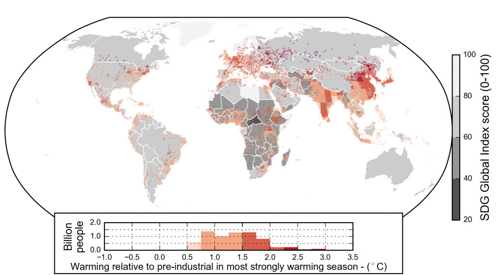
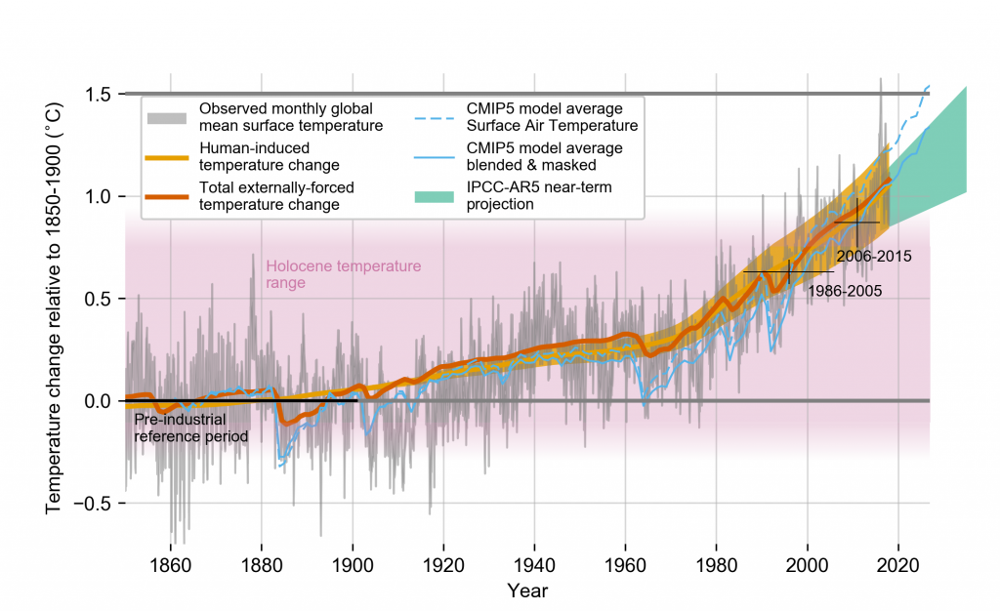
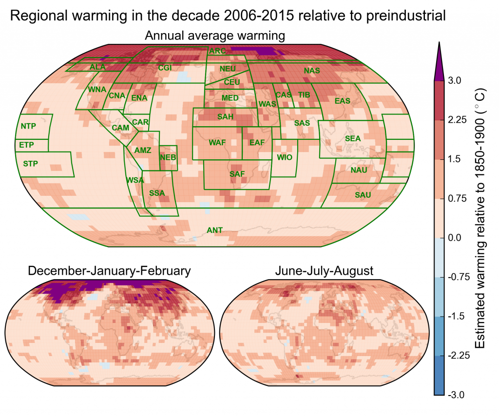
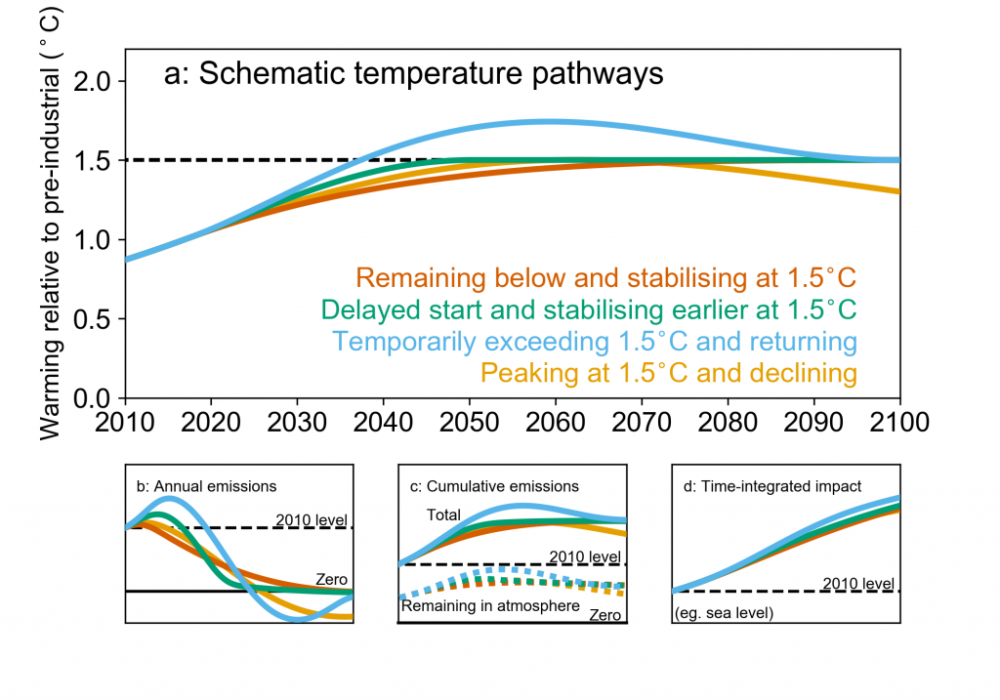
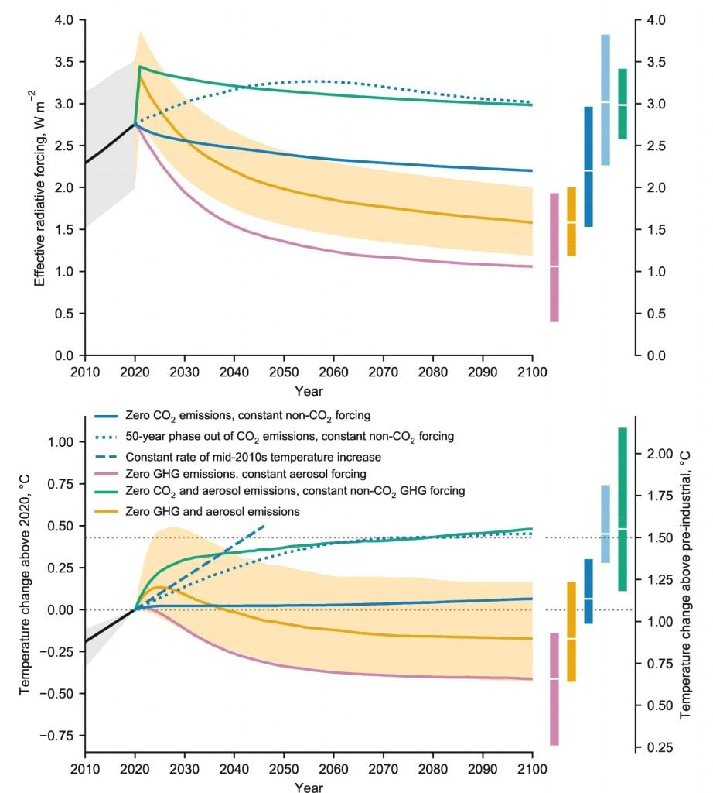
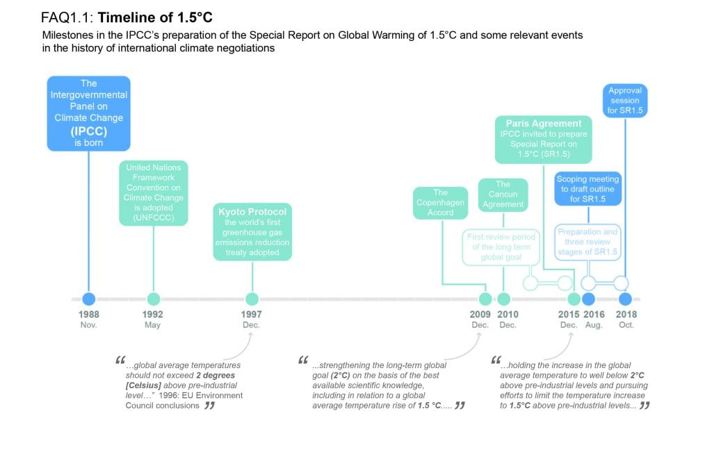
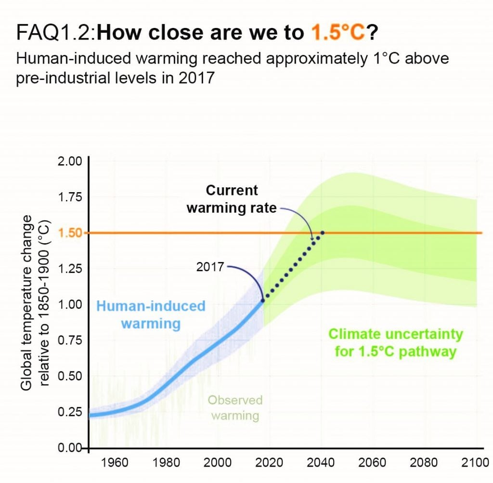

Understanding the impacts of 1.5°C global warming above pre-industrial levels and related global emission pathways in the context of strengthening the response to the threat of climate change, sustainable development and efforts to eradicate poverty.
Coordinating Lead Authors
Lead Authors
Contributing Authors
Chapter Scientist
Review Editors
This chapter should be cited as:
Allen, M.R., O.P. Dube, W. Solecki, F. Aragón-Durand, W. Cramer, S. Humphreys, M. Kainuma, J. Kala, N. Mahowald, Y. Mulugetta, R. Perez, M. Wairiu, and K. Zickfeld, 2018: Framing and Context. In: Global Warming of 1.5°C. An IPCC Special Report on the impacts of global warming of 1.5°C above pre-industrial levels and related global greenhouse gas emission pathways, in the context of strengthening the global response to the threat of climate change, sustainable development, and efforts to eradicate poverty [Masson-Delmotte, V., P. Zhai, H.-O. Pörtner, D. Roberts, J. Skea, P.R. Shukla, A. Pirani, W. Moufouma-Okia, C. Péan, R. Pidcock, S. Connors, J.B.R. Matthews, Y. Chen, X. Zhou, M.I. Gomis, E. Lonnoy, T. Maycock, M. Tignor, and T. Waterfield (eds.)]. Cambridge University Press, Cambridge, UK and New York, NY, USA, pp. 49-92, doi: 10.1017/9781009157940.003 .
This chapter frames the context, knowledge-base and assessment approaches used to understand the impacts of 1.5°C global warming above pre-industrial levels and related global greenhouse gas emission pathways, building on the IPCC Fifth Assessment Report (AR5), in the context of strengthening the global response to the threat of climate change, sustainable development and efforts to eradicate poverty.
Human-induced warming reached approximately 1°C (likely between 0.8°C and 1.2°C) above pre-industrial levels in 2017, increasing at 0.2°C (likely between 0.1°C and 0.3°C) per decade (high confidence). Global warming is defined in this report as an increase in combined surface air and sea surface temperatures averaged over the globe and over a 30-year period. Unless otherwise specified, warming is expressed relative to the period 1850–1900, used as an approximation of pre-industrial temperatures in AR5. For periods shorter than 30 years, warming refers to the estimated average temperature over the 30 years centred on that shorter period, accounting for the impact of any temperature fluctuations or trend within those 30 years. Accordingly, warming from pre- industrial levels to the decade 2006–2015 is assessed to be 0.87°C (likely between 0.75°C and 0.99°C). Since 2000, the estimated level of human-induced warming has been equal to the level of observed warming with a likely range of ±20% accounting for uncertainty due to contributions from solar and volcanic activity over the historical period (high confidence). {1.2.1}
Warming greater than the global average has already been experienced in many regions and seasons, with higher average warming over land than over the ocean (high confidence). Most land regions are experiencing greater warming than the global average, while most ocean regions are warming at a slower rate. Depending on the temperature dataset considered, 20–40% of the global human population live in regions that, by the decade 2006–2015, had already experienced warming of more than 1.5°C above pre-industrial in at least one season (medium confidence). {1.2.1, 1.2.2}
Past emissions alone are unlikely to raise global-mean temperature to 1.5°C above pre-industrial levels (medium confidence) , but past emissions do commit to other changes, such as further sea level rise (high confidence). If all anthropogenic emissions (including aerosol-related) were reduced to zero immediately, any further warming beyond the 1°C already experienced would likely be less than 0.5°C over the next two to three decades (high confidence), and likely less than 0.5°C on a century time scale (medium confidence), due to the opposing effects of different climate processes and drivers. A warming greater than 1.5°C is therefore not geophysically unavoidable: whether it will occur depends on future rates of emission reductions. {1.2.3, 1.2.4}
1.5°C emission pathways are defined as those that, given current knowledge of the climate response, provide a one- in-two to two-in-three chance of warming either remaining below 1.5°C or returning to 1.5°C by around 2100 following an overshoot. Overshoot pathways are characterized by the peak magnitude of the overshoot, which may have implications for impacts. All 1.5°C pathways involve limiting cumulative emissions of long-lived greenhouse gases, including carbon dioxide and nitrous oxide, and substantial reductions in other climate forcers (high confidence). Limiting cumulative emissions requires either reducing net global emissions of long-lived greenhouse gases to zero before the cumulative limit is reached, or net negative global emissions (anthropogenic removals) after the limit is exceeded. {1.2.3, 1.2.4, Cross-Chapter Boxes 1 and 2}
This report assesses projected impacts at a global average warming of 1.5°C and higher levels of warming. Global warming of 1.5°C is associated with global average surface temperatures fluctuating naturally on either side of 1.5°C, together with warming substantially greater than 1.5°C in many regions and seasons (high confidence), all of which must be considered in the assessment of impacts. Impacts at 1.5°C of warming also depend on the emission pathway to 1.5°C. Very different impacts result from pathways that remain below 1.5°C versus pathways that return to 1.5°C after a substantial overshoot, and when temperatures stabilize at 1.5°C versus a transient warming past 1.5°C (medium confidence). {1.2.3, 1.3}
Ethical considerations, and the principle of equity in particular, are central to this report, recognizing that many of the impacts of warming up to and beyond 1.5°C, and some potential impacts of mitigation actions required to limit warming to 1.5°C, fall disproportionately on the poor and vulnerable (high confidence). Equity has procedural and distributive dimensions and requires fairness in burden sharing both between generations and between and within nations. In framing the objective of holding the increase in the global average temperature rise to well below 2°C above pre-industrial levels, and to pursue efforts to limit warming to 1.5°C, the Paris Agreement associates the principle of equity with the broader goals of poverty eradication and sustainable development, recognising that effective responses to climate change require a global collective effort that may be guided by the 2015 United Nations Sustainable Development Goals. {1.1.1}
Climate adaptation refers to the actions taken to manage impacts of climate change by reducing vulnerability and exposure to its harmful effects and exploiting any potential benefits. Adaptation takes place at international, national and local levels. Subnational jurisdictions and entities, including urban and rural municipalities, are key to developing and reinforcing measures for reducing weather- and climate-related risks. Adaptation implementation faces several barriers including lack of up-to-date and locally relevant information, lack of finance and technology, social values and attitudes, and institutional constraints (high confidence). Adaptation is more likely to contribute to sustainable development when policies align with mitigation and poverty eradication goals (medium confidence). {1.1, 1.4}
Ambitious mitigation actions are indispensable to limit warming to 1.5°C while achieving sustainable development and poverty eradication (high confidence). Ill-designed responses, however, could pose challenges especially – but not exclusively – for countries and regions contending with poverty and those requiring significant transformation of their energy systems. This report focuses on ‘climate-resilient development pathways’, which aim to meet the goals of sustainable development, including climate adaptation and mitigation, poverty eradication and reducing inequalities. But any feasible pathway that remains within 1.5°C involves synergies and trade-offs (high confidence). Significant uncertainty remains as to which pathways are more consistent with the principle of equity.
{1.1.1, 1.4}
Multiple forms of knowledge, including scientific evidence, narrative scenarios and prospective pathways, inform the understanding of 1.5°C. This report is informed by traditional evidence of the physical climate system and associated impacts and vulnerabilities of climate change, together with knowledge drawn from the perceptions of risk and the experiences of climate impacts and governance systems. Scenarios and pathways are used to explore conditions enabling goal-oriented futures while recognizing the significance of ethical considerations, the principle of equity, and the societal transformation needed. {1.2.3, 1.5.2}
There is no single answer to the question of whether it is feasible to limit warming to 1.5°C and adapt to the consequences. Feasibility is considered in this report as the capacity of a system as a whole to achieve a specific outcome. The global transformation that would be needed to limit warming to 1.5°C requires enabling conditions that reflect the links, synergies and trade-offs between mitigation, adaptation and sustainable development. These enabling conditions are assessed across many dimensions of feasibility – geophysical, environmental-ecological, technological, economic, socio-cultural and institutional – that may be considered through the unifying lens of the Anthropocene, acknowledging profound, differential but increasingly geologically significant human influences on the Earth system as a whole. This framing also emphasises the global interconnectivity of past, present and future human–environment relations, highlighting the need and opportunities for integrated responses to achieve the goals of the Paris Agreement. {1.1, Cross-Chapter Box 1}
Human influence on climate has been the dominant cause of observed warming since the mid-20th century, while global average surface temperature warmed by 0.85°C between 1880 and 2012, as reported in the IPCC Fifth Assessment Report, or AR5 (IPCC, 2013b)1. Many regions of the world have already greater regional-scale warming, with 20–40% of the global population (depending on the temperature dataset used) having experienced over 1.5°C of warming in at least one season (Figure 1.1; Chapter 3 Section 3.3.2.1). Temperature rise to date has already resulted in profound alterations to human and natural systems, including increases in droughts, floods, and some other types of extreme weather; sea level rise; and biodiversity loss – these changes are causing unprecedented risks to vulnerable persons and populations (IPCC, 2012a, 2014a; Mysiak et al., 2016; Chapter 3 Sections 3.4.5–3.4.13)2, Chapter 3 Section 3.4). The most affected people live in low and middle income countries, some of which have experienced a decline in food security, which in turn is partly linked to rising migration and poverty (IPCC, 2012a)3. Small islands, megacities, coastal regions, and high mountain ranges are likewise among the most affected (Albert et al., 2017)4. Worldwide, numerous ecosystems are at risk of severe impacts, particularly warm-water tropical reefs and Arctic ecosystems (IPCC, 2014a)5.
This report assesses current knowledge of the environmental, technical, economic, financial, socio-cultural, and institutional dimensions of a 1.5°C warmer world (meaning, unless otherwise specified, a world in which warming has been limited to 1.5°C relative to pre-industrial levels). Differences in vulnerability and exposure arise from numerous non-climatic factors (IPCC, 2014a)6. Global economic growth has been accompanied by increased life expectancy and income in much of the world; however, in addition to environmental degradation and pollution, many regions remain characterised by significant poverty and severe inequalityin income distribution and access to resources, amplifying vulnerability to climate change (Dryzek, 2016; Pattberg and Zelli, 2016; Bäckstrand et al., 2017; Lövbrand et al., 2017)7. World population continues to rise, notably in hazard-prone small and medium-sized cities in low- and moderate-income countries (Birkmann et al., 2016)8. The spread of fossil-fuel-based material consumption and changing lifestyles is a major driver of global resource use, and the main contributor to rising greenhouse gas (GHG) emissions (Fleurbaey et al., 2014)9.
The overarching context of this report is this: human influence has become a principal agent of change on the planet, shifting the world out of the relatively stable Holocene period into a new geological era, often termed the Anthropocene (Box 1.1). Responding to climate change in the Anthropocene will require approaches that integrate multiple levels of interconnectivity across the global community.
This chapter is composed of seven sections linked to the remaining four chapters of the report. This introductory Section 1.1 situates the basic elements of the assessment within the context of sustainable development; considerations of ethics, equity and human rights; and the problem of poverty. Section 1.2 focuses on understanding 1.5°C, global versus regional warming, 1.5°C pathways, and associated emissions. Section 1.3 frames the impacts at 1.5°C and beyond on natural and human systems. The section on strengthening the global response (1.4) frames responses, governance and implementation, and trade-offs and synergies between mitigation, adaptation, and the Sustainable Development Goals (SDGs) under transformation, transformation pathways, and transition. Section 1.5 provides assessment frameworks and emerging methodologies that integrate climate change mitigation and adaptation with sustainable development. Section 1.6 defines approaches used to communicate confidence, uncertainty and risk, while 1.7 presents the storyline of the whole report.
Figure 1.1
Human experience of present-day warming. Different shades of pink to purple indicated by the inset histogram show estimated warming for the season that has warmed the most at a given location between the periods 1850–1900 and 2006–2015, during which global average temperatures rose by 0.91°C in this dataset (Cowtan and Way, 2014) and 0.87°C in […]

Human experience of present-day warming. Different shades of pink to purple indicated by the inset histogram show estimated warming for the season that has warmed the most at a given location between the periods 1850–1900 and 2006–2015, during which global average temperatures rose by 0.91°C in this dataset (Cowtan and Way, 2014)10 and 0.87°C in the multi-dataset average (Table 1.1 and Figure 1.3). The density of dots indicates the population (in 2010) in any 1° × 1° grid box. The underlay shows national Sustainable Development Goal (SDG) Global Index Scores indicating performance across the 17 SDGs. Hatching indicates missing SDG index data (e.g., Greenland). The histogram shows the population living in regions experiencing different levels of warming (at 0.25°C increments). See Supplementary Material 1.SM for further details.
Introduction
The concept of the Anthropocene can be linked to the aspiration of the Paris Agreement. The abundant empirical evidence of the unprecedented rate and global scale of impact of human influence on the Earth System (Steffen et al., 2016; Waters et al., 2016)11 has led many scientists to call for an acknowledgement that the Earth has entered a new geological epoch: the Anthropocene (Crutzen and Stoermer, 2000; Crutzen, 2002; Gradstein et al., 2012)12. Although rates of change in the Anthropocene are necessarily assessed over much shorter periods than those used to calculate long-term baseline rates of change, and therefore present challenges for direct comparison, they are nevertheless striking. The rise in global CO 2 concentration since 2000 is about 20 ppm per decade, which is up to 10 times faster than any sustained rise in CO 2 during the past 800,000 years (Lüthi et al., 2008; Bereiter et al., 2015)13. AR5 found that the last geological epoch with similar atmospheric CO 2 concentration was the Pliocene, 3.3 to 3.0 Ma (Masson-Delmotte et al., 2013)14. Since 1970 the global average temperature has been rising at a rate of 1.7°C per century, compared to a long-term decline over the past 7,000 years at a baseline rate of 0.01°C per century (NOAA, 2016; Marcott et al., 2013). These global-level rates of human-driven change far exceed the rates of change driven by geophysical or biosphere forces that have altered the Earth System trajectory in the past (e.g., Summerhayes 2015; Foster et al., 2017); even abrupt geophysical events do not approach current rates of human-driven change.
The Geological Dimension of the Anthropocene and 1.5°C Global Warming
The process of formalising the Anthropocene is on-going (Zalasiewicz et al., 2017)15, but a strong majority of the Anthropocene Working Group (AWG) established by the Subcommission on Quaternary Stratigraphy of the International Commission on Stratigraphy have agreed that: (i) the Anthropocene has a geological merit; (ii) it should follow the Holocene as a formal epoch in the Geological Time Scale; and, (iii) its onset should be defined as the mid-20th century. Potential markers in the stratigraphic record include an array of novel manufactured materials of human origin, and “these combined signals render the Anthropocene stratigraphically distinct from the Holocene and earlier epochs” (Waters et al., 2016)16. The Holocene period, which itself was formally adopted in 1885 by geological science community, began 11,700 years ago with a more stable warm climate providing for emergence of human civilisation and growing human-nature interactions that have expanded to give rise to the Anthropocene (Waters et al., 2016)17.
The Anthropocene and the Challenge of a 1.5° C Warmer World
The Anthropocene can be employed as a “boundary concept” (Brondizio et al., 2016)18 that frames critical insights into understanding the drivers, dynamics and specific challenges in responding to the ambition of keeping global temperature well below 2°C while pursuing efforts towards and adapting to a 1.5°C warmer world. The United Nations Framework Convention on Climate Change (UNFCCC) and its Paris Agreement recognize the ability of humans to influence geophysical planetary processes (Chapter 2, Cross-Chapter Box 1 in this chapter). The Anthropocene offers a structured understanding of the culmination of past and present human–environmental relations and provides an opportunity to better visualize the future to minimize pitfalls (Pattberg and Zelli, 2016; Delanty and Mota, 2017)19, while acknowledging the differentiated responsibility and opportunity to limit global warming and invest in prospects for climate-resilient sustainable development (Harrington, 2016)20 (Chapter 5). The Anthropocene also provides an opportunity to raise questions regarding the regional differences, social inequities, and uneven capacities and drivers of global social–environmental changes, which in turn inform the search for solutions as explored in Chapter 4 of this report (Biermann et al., 2016)21. It links uneven influences of human actions on planetary functions to an uneven distribution of impacts (assessed in Chapter 3) as well as the responsibility and response capacity to, for example, limit global warming to no more than a 1.5°C rise above pre-industrial levels. Efforts to curtail greenhouse gas emissions without incorporating the intrinsic interconnectivity and disparities associated with the Anthropocene world may themselves negatively affect the development ambitions of some regions more than others and negate sustainable development efforts (see Chapter 2 and Chapter 5).
The AR5 suggested that equity, sustainable development, and poverty eradication are best understood as mutually supportive and co-achievable within the context of climate action and are underpinned by various other international hard and soft law instruments (Denton et al., 2014; Fleurbaey et al., 2014; Klein et al., 2014; Olsson et al., 2014; Porter et al., 2014; Stavins et al., 2014)22. The aim of the Paris Agreement under the UNFCCC to ‘pursue efforts to limit’ the rise in global temperatures to 1.5°C above pre-industrial levels raises ethical concerns that have long been central to climate debates (Fleurbaey et al., 2014; Kolstad et al., 2014)23. The Paris Agreement makes particular reference to the principle of equity, within the context of broader international goals of sustainable development and poverty eradication. Equity is a long-standing principle within international law and climate change law in particular (Shelton, 2008; Bodansky et al., 2017)24.
The AR5 describes equity as having three dimensions: intergenerational (fairness between generations), international (fairness between states), and national (fairness between individuals) (Fleurbaey et al., 2014)25. The principle is generally agreed to involve both procedural justice (i.e., participation in decision making) and distributive justice (i.e., how the costs and benefits of climate actions are distributed) (Kolstad et al., 2014; Savaresi, 2016; Reckien et al., 2017)26. Concerns regarding equity have frequently been central to debates around mitigation, adaptation and climate governance (Caney, 2005; Schroeder et al., 2012; Ajibade, 2016; Reckien et al., 2017; Shue, 2018)27. Hence, equity provides a framework for understanding the asymmetries between the distributions of benefits and costs relevant to climate action (Schleussner et al., 2016; Aaheim et al., 2017)28.
Four key framing asymmetries associated with the conditions of a 1.5°C warmer world have been noted (Okereke, 2010; Harlan et al., 2015; Ajibade, 2016; Savaresi, 2016; Reckien et al., 2017)29 and are reflected in the report’s assessment. The first concerns differential contributions to the problem: the observation that the benefits from industrialization have been unevenly distributed and those who benefited most historically also have contributed most to the current climate problem and so bear greater responsibility (Shue, 2013; McKinnon, 2015; Otto et al., 2017; Skeie et al., 2017)30. The second asymmetry concerns differential impact: the worst impacts tend to fall on those least responsible for the problem, within states, between states, and between generations (Fleurbaey et al., 2014; Shue, 2014; Ionesco et al., 2016)31. The third is the asymmetry in capacity to shape solutions and response strategies, such that the worst-affected states, groups, and individuals are not always well represented (Robinson and Shine, 2018)32. Fourth, there is an asymmetry in future response capacity: some states, groups, and places are at risk of being left behind as the world progresses to a low-carbon economy (Fleurbaey et al., 2014; Shue, 2014; Humphreys, 2017)33.
A sizeable and growing literature exists on how best to operationalize climate equity considerations, drawing on other concepts mentioned in the Paris Agreement, notably its explicit reference to human rights (OHCHR, 2009; Caney, 2010; Adger et al., 2014; Fleurbaey et al., 2014; IBA, 2014; Knox, 2015; Duyck et al., 2018; Robinson and Shine, 2018)34. Human rights comprise internationally agreed norms that align with the Paris ambitions of poverty eradication, sustainable development, and the reduction of vulnerability (Caney, 2010; Fleurbaey et al., 2014; OHCHR, 2015)35. In addition to defining substantive rights (such as to life, health, and shelter) and procedural rights (such as to information and participation), human rights instruments prioritise the rights of marginalized groups, children, vulnerable and indigenous persons, and those discriminated against on grounds such as gender, race, age or disability (OHCHR, 2017)36. Several international human rights obligations are relevant to the implementation of climate actions and consonant with UNFCCC undertakings in the areas of mitigation, adaptation, finance, and technology transfer (Knox, 2015; OHCHR, 2015; Humphreys, 2017)37.
Much of this literature is still new and evolving (Holz et al., 2017; Dooley et al., 2018; Klinsky and Winkler, 2018)38, permitting the present report to examine some broader equity concerns raised both by possible failure to limit warming to 1.5°C and by the range of ambitious mitigation efforts that may be undertaken to achieve that limit. Any comparison between 1.5°C and higher levels of warming implies risk assessments and value judgements and cannot straightforwardly be reduced to a cost-benefit analysis (Kolstad et al., 2014)39. However, different levels of warming can nevertheless be understood in terms of their different implications for equity – that is, in the comparative distribution of benefits and burdens for specific states, persons, or generations, and in terms of their likely impacts on sustainable development and poverty (see especially Sections 2.3.4.2, 2.5, 3.4.5–3.4.13, 3.6, 5.4.1, 5.4.2, 5.6 and Cross-Chapter boxes 6 in Chapter 3 and 12 in Chapter 5).
This report assesses the role of poverty and its eradication in the context of strengthening the global response to the threat of climate change and sustainable development. A wide range of definitions for poverty exist. The AR5 discussed ‘poverty’ in terms of its multidimensionality, referring to ‘material circumstances’ (e.g., needs, patterns of deprivation, or limited resources), as well as to economic conditions (e.g., standard of living, inequality, or economic position), and/or social relationships (e.g., social class, dependency, lack of basic security, exclusion, or lack of entitlement; Olsson et al., 2014)40. The UNDP now uses a Multidimensional Poverty Index and estimates that about 1.5 billion people globally live in multidimensional poverty, especially in rural areas of South Asia and Sub-Saharan Africa, with an additional billion at risk of falling into poverty (UNDP, 2016)41.
A large and rapidly growing body of knowledge explores the connections between climate change and poverty. Climatic variability and climate change are widely recognized as factors that may exacerbate poverty, particularly in countries and regions where poverty levels are high (Leichenko and Silva, 2014)42. The AR5 noted that climate change-driven impacts often act as a threat multiplier in that the impacts of climate change compound other drivers of poverty (Olsson et al., 2014)43. Many vulnerable and poor people are dependent on activities such as agriculture that are highly susceptible to temperature increases and variability in precipitation patterns (Shiferaw et al., 2014; Miyan, 2015)44. Even modest changes in rainfall and temperature patterns can push marginalized people into poverty as they lack the means to recover from associated impacts. Extreme events, such as floods, droughts, and heat waves, especially when they occur in series, can significantly erode poor people’s assets and further undermine their livelihoods in terms of labour productivity, housing, infrastructure and social networks (Olsson et al., 2014)45.
AR5 (IPCC, 2014c)46 noted with high confidence that ‘equity is an integral dimension of sustainable development’ and that ‘mitigation and adaptation measures can strongly affect broader sustainable development and equity objectives’ (Fleurbaey et al., 2014)47. Limiting global warming to 1.5°C would require substantial societal and technological transformations, dependent in turn on global and regional sustainable development pathways. A range of pathways, both sustainable and not, are explored in this report, including implementation strategies to understand the enabling conditions and challenges required for such a transformation. These pathways and connected strategies are framed within the context of sustainable development, and in particular the United Nations 2030 Agenda for Sustainable Development (UN, 2015b)48 and Cross-Chapter Box 4 on SDGs (in this chapter). The feasibility of staying within 1.5°C depends upon a range of enabling conditions with geophysical, environmental–ecological, technological, economic, socio-cultural, and institutional dimensions. Limiting warming to 1.5°C also involves identifying technology and policy levers to accelerate the pace of transformation (see Chapter 4). Some pathways are more consistent than others with the requirements for sustainable development (see Chapter 5). Overall, the three-pronged emphasis on sustainable development, resilience, and transformation provides Chapter 5 an opportunity to assess the conditions of simultaneously reducing societal vulnerabilities, addressing entrenched inequalities, and breaking the circle of poverty.
The feasibility of any global commitment to a 1.5°C pathway depends, in part, on the cumulative influence of the nationally determined contributions (NDCs), committing nation states to specific GHG emission reductions. The current NDCs, extending only to 2030, do not limit warming to 1.5°C. Depending on mitigation decisions after 2030, they cumulatively track toward a warming of 3°-4°C above pre-industrial temperatures by 2100, with the potential for further warming thereafter (Rogelj et al., 2016a; UNFCCC, 2016)49. The analysis of pathways in this report reveals opportunities for greater decoupling of economic growth from GHG emissions. Progress towards limiting warming to 1.5°C requires a significant acceleration of this trend. AR5 concluded that climate change constrains possible development paths, that synergies and trade-offs exist between climate responses and socio-economic contexts, and that opportunities for effective climate responses overlap with opportunities for sustainable development, noting that many existing societal patterns of consumption are intrinsically unsustainable (Fleurbaey et al., 2014)50.
What is meant by ‘the increase in global average temperature… above pre-industrial levels’ referred to in the Paris Agreement depends on the choice of pre-industrial reference period, whether 1.5°C refers to total warming or the human-induced component of that warming, and which variables and geographical coverage are used to define global average temperature change. The cumulative impact of these definitional ambiguities (e.g., Hawkins et al., 2017; Pfleiderer et al., 2018)51 is comparable to natural multi-decadal temperature variability on continental scales (Deser et al., 2012)52 and primarily affects the historical period, particularly that prior to the early 20th century when data is sparse and of less certain quality. Most practical mitigation and adaptation decisions do not depend on quantifying historical warming to this level of precision, but a consistent working definition is necessary to ensure consistency across chapters and figures. We adopt definitions that are as consistent as possible with key findings of AR5 with respect to historical warming.
This report defines ‘warming’, unless otherwise qualified, as an increase in multi-decade global mean surface temperature (GMST) above pre-industrial levels. Specifically, warming at a given point in time is defined as the global average of combined land surface air and sea surface temperatures for a 30-year period centred on that time, expressed relative to the reference period 1850–1900 (adopted for consistency with Box SPM.1 Figure 1 of IPCC (2014a)53 ‘as an approximation of pre-industrial levels’, excluding the impact of natural climate fluctuations within that 30-year period and assuming any secular trend continues throughout that period, extrapolating into the future if necessary. There are multiple ways of accounting for natural fluctuations and trends (e.g., Foster and Rahmstorf, 2011; Haustein et al., 2017; Medhaug et al., 2017; Folland et al., 2018; Visser et al., 2018)54, but all give similar results. A major volcanic eruption might temporarily reduce observed global temperatures, but would not reduce warming as defined here (Bethke et al., 2017)55. Likewise, given that the level of warming is currently increasing at 0.3°C–0.7°C per 30 years (likely range quoted in Kirtman et al., 201356 and supported by Folland et al., 2018)57, the level of warming in 2017 was 0.15°C–0.35°C higher than average warming over the 30-year period 1988–2017.
In summary, this report adopts a working definition of ‘1.5°C relative to pre-industrial levels’ that corresponds to global average combined land surface air and sea surface temperatures either 1.5°C warmer than the average of the 51-year period 1850–1900, 0.87°C warmer than the 20-year period 1986–2005, or 0.63°C warmer than the decade 2006–2015. These offsets are based on all available published global datasets, combined and updated, which show that 1986–2005 was 0.63°C warmer than 1850–1900 (with a 5–95% range of 0.57°C–0.69°C based on observational uncertainties alone), and 2006–2015 was 0.87°C warmer than 1850–1900 (with a likely range of 0.75°C–0.99°C, also accounting for the possible impact of natural fluctuations). Where possible, estimates of impacts and mitigation pathways are evaluated relative to these more recent periods. Note that the 5–95% intervals often quoted in square brackets in AR5 correspond to very likely ranges, while likely ranges correspond to 17–83%, or the central two-thirds, of the distribution of uncertainty.
The IPCC has traditionally defined changes in observed GMST as a weighted average of near-surface air temperature (SAT) changes over land and sea surface temperature (SST) changes over the oceans (Morice et al., 2012; Hartmann et al., 2013)58, while modelling studies have typically used a simple global average SAT. For ambitious mitigation goals, and under conditions of rapid warming or declining sea ice (Berger et al., 2017)59, the difference can be significant. Cowtan et al. (2015)60 and Richardson et al. (2016)61 show that the use of blended SAT/SST data and incomplete coverage together can give approximately 0.2°C less warming from the 19th century to the present relative to the use of complete global-average SAT (Stocker et al., 201362, Figure TFE8.1 and Figure 1.2). However, Richardson et al. (2018)63 show that this is primarily an issue for the interpretation of the historical record to date, with less absolute impact on projections of future changes, or estimated emissions budgets, under ambitious mitigation scenarios.
The three GMST reconstructions used in AR5 differ in their treatment of missing data. GISTEMP (Hansen et al., 2010)64 uses interpolation to infer trends in poorly observed regions like the Arctic (although even this product is spatially incomplete in the early record), while NOAAGlobalTemp (Vose et al., 2012)65 and HadCRUT (Morice et al., 2012)66 are progressively closer to a simple average of available observations. Since the AR5, considerable effort has been devoted to more sophisticated statistical modelling to account for the impact of incomplete observation coverage (Rohde et al., 2013; Cowtan and Way, 2014; Jones, 2016)67. The main impact of statistical infilling is to increase estimated warming to date by about 0.1°C (Richardson et al., 201868 and Table 1.1).
We adopt a working definition of warming over the historical period based on an average of the four available global datasets that are supported by peer-reviewed publications: the three datasets used in the AR5, updated (Karl et al., 2015)69, together with the Cowtan-Way infilled dataset (Cowtan and Way, 2014)70. A further two datasets, Berkeley Earth (Rohde et al., 2013)71 and that of the Japan Meteorological Agency (JMA), are provided in Table 1.1. This working definition provides an updated estimate of 0.86°C for the warming over the period 1880–2012 based on a linear trend. This quantity was quoted as 0.85°C in the AR5. Hence the inclusion of the Cowtan-Way dataset does not introduce any inconsistency with the AR5, whereas redefining GMST to represent global SAT could increase this figure by up to 20% (Table 1.1, blue lines in Figure 1.2 and Richardson et al., 2016)72.
Figure 1.2
Evolution of global mean surface temperature (GMST) over the period of instrumental observations.

Grey shaded line shows monthly mean GMST in the HadCRUT4, NOAAGlobalTemp, GISTEMP and Cowtan-Way datasets, expressed as departures from 1850–1900, with varying grey line thickness indicating inter-dataset range. All observational datasets shown represent GMST as a weighted average of near surface air temperature over land and sea surface temperature over oceans. Human-induced (yellow) and total (human- and naturally-forced, orange) contributions to these GMST changes are shown calculated following Otto et al. (2015)73 and Haustein et al. (2017)74. Fractional uncertainty in the level of human-induced warming in 2017 is set equal to ±20% based on multiple lines of evidence. Thin blue lines show the modelled global mean surface air temperature (dashed) and blended surface air and sea surface temperature accounting for observational coverage (solid) from the CMIP5 historical ensemble average extended with RCP8.5 forcing (Cowtan et al., 2015; Richardson et al., 2018)75. The pink shading indicates a range for temperature fluctuations over the Holocene (Marcott et al., 2013)76. Light green plume shows the AR5 prediction for average GMST over 2016–2035 (Kirtman et al., 2013)77. See Supplementary Material 1.SM for further details.
Any choice of reference period used to approximate ‘pre-industrial’ conditions is a compromise between data coverage and representativeness of typical pre-industrial solar and volcanic forcing conditions. This report adopts the 51-year reference period, 1850–1900 inclusive, assessed as an approximation of pre-industrial levels in AR5 (Box TS.5, Figure 1 of Field et al., 2014)78. The years 1880–1900 are subject to strong but uncertain volcanic forcing, but in the HadCRUT4 dataset, average temperatures over 1850–1879, prior to the largest eruptions, are less than 0.01°C from the average for 1850–1900. Temperatures rose by 0.0°C–0.2°C from 1720–1800 to 1850–1900 (Hawkins et al., 2017)79, but the anthropogenic contribution to this warming is uncertain (Abram et al., 2016; Schurer et al., 2017)80. The 18th century represents a relatively cool period in the context of temperatures since the mid-Holocene (Marcott et al., 2013; Lüning and Vahrenholt, 2017; Marsicek et al., 2018)81, which is indicated by the pink shaded region in Figure 1.2.
Projections of responses to emission scenarios, and associated impacts, may use a more recent reference period, offset by historical observations, to avoid conflating uncertainty in past and future changes (e.g., Hawkins et al., 2017; Millar et al., 2017b; Simmons et al., 2017)82. Two recent reference periods are used in this report: 1986–2005 and 2006–2015. In the latter case, when using a single decade to represent a 30-year average centred on that decade, it is important to consider the potential impact of internal climate variability. The years 2008–2013 were characterised by persistent cool conditions in the Eastern Pacific (Kosaka and Xie, 2013; Medhaug et al., 2017)83, related to both the El Niño-Southern Oscillation (ENSO) and, potentially, multi-decadal Pacific variability (e.g., England et al., 2014)84, but these were partially compensated for by El Niño conditions in 2006 and 2015. Likewise, volcanic activity depressed temperatures in 1986–2005, partly offset by the very strong El Niño event in 1998. Figure 1.2 indicates that natural variability (internally generated and externally driven) had little net impact on average temperatures over 2006–2015, in that the average temperature of the decade is similar to the estimated externally driven warming. When solar, volcanic and ENSO-related variability is taken into account following the procedure of Foster and Rahmstorf (2011)85, there is no indication of average temperatures in either 1986–2005 or 2006–2015 being substantially biased by short-term variability (see Supplementary Material 1.SM.2). The temperature difference between these two reference periods (0.21°C–0.27°C over 15 years across available datasets) is also consistent with the AR5 assessment of the current warming rate of 0.3°C–0.7°C over 30 years (Kirtman et al., 2013)86.
On the definition of warming used here, warming to the decade 2006–2015 comprises an estimate of the 30-year average centred on this decade, or 1996–2025, assuming the current trend continues and that any volcanic eruptions that might occur over the final seven years are corrected for. Given this element of extrapolation, we use the AR5 near-term projection to provide a conservative uncertainty range. Combining the uncertainty in observed warming to 1986–2005 (±0.06°C) with the likely range in the current warming trend as assessed by AR5 (±0.2°C/30 years), assuming these are uncorrelated, and using observed warming relative to 1850–1900 to provide the central estimate (no evidence of bias from short-term variability), gives an assessed warming to the decade 2006–2015 of 0.87°C with a ±0.12°C likely range. This estimate has the advantage of traceability to the AR5, but more formal methods of quantifying externally driven warming (e.g., Bindoff et al., 2013; Jones et al., 2016; Haustein et al., 2017; Ribes et al., 2017)87, which typically give smaller ranges of uncertainty, may be adopted in the future.
Table 1.1
Observed increase in global average surface temperature in various datasets. Numbers in square brackets correspond to 5–95% uncertainty ranges from individual datasets, encompassing known sources of observational uncertainty only.
| Diagnostic / dataset | 1850–1900 to (1) 2006–2015 |
1850–1900 to (2) 1986–2005 |
1986–2005 to (3) 2006–2015 |
1850–1900 to (4) 1981–2010 |
1850–1900 to (5) 1998–2017 |
Trend (6) 1880–2012 |
Trend (6) 1880–2015 |
| HadCRUT4.6 | 0.84
[0.79–0.89] |
0.60
[0.57–0.66] |
0.22
[0.21–0.23] |
0.62
[0.58–0.67] |
0.83
[0.78–0.88] |
0.83
[0.77–0.90] |
0.88
[0.83–0.95] |
| NOAAGlobalTemp (7) | 0.86 | 0.62 | 0.22 | 0.63 | 0.85 | 0.91 | |
| GISTEMP (7) | 0.89 | 0.65 | 0.23 | 0.66 | 0.88 | 0.89 | 0.94 |
| Cowtan-Way | 0.91
[0.85–0.99] |
0.65
[0.60–0.72] |
0.26
[0.25–0.27] |
0.65
[0.60–0.72] |
0.88
[0.82–0.96] |
0.88
[0.79–0.98] |
0.93
[0.85–1.03] |
| Average (8) | 0.87 | 0.63 | 0.23 | 0.64 | 0.86 | 0.92 | |
| Berkeley (9) | 0.98 | 0.73 | 0.25 | 0.73 | 0.97 | 1.02 | |
| JMA (9) | 0.82 | 0.59 | 0.17 | 0.60 | 0.81 | 0.82 | 0.87 |
| ERA-Interim | N/A | 0.26 | N/A | ||||
| JRA-55 | N/A | 0.23 | N/A | ||||
| CMIP5 global SAT (10) | 0.99
[0.65–1.37] |
0.62
[0.38–0.94] |
0.38
[0.24–0.62] |
0.62
[0.34–0.93] |
0.89
[0.62–1.29] |
0.81
[0.58–1.31] |
0.86
[0.63–1.39] |
| CMIP5 SAT/SST blend—masked | 0.86
[0.54–1.18] |
0.50
[0.31–0.79] |
0.34
[0.19–0.54] |
0.48
[0.26–0.79] |
0.75
[0.52–1.11] |
0.68
[0.45–1.08] |
0.74
[0.51–1.14] |
Notes:
Total warming refers to the actual temperature change, irrespective of cause, while human-induced warming refers to the component of that warming that is attributable to human activities. Mitigation studies focus on human-induced warming (that is not subject to internal climate variability), while studies of climate change impacts typically refer to total warming (often with the impact of internal variability minimised through the use of multi-decade averages).
In the absence of strong natural forcing due to changes in solar or volcanic activity, the difference between total and human-induced warming is small: assessing empirical studies quantifying solar and volcanic contributions to GMST from 1890 to 2010, AR5 (Figure 10.6 of Bindoff et al., 2013)89 found their net impact on warming over the full period to be less than plus or minus 0.1°C. Figure 1.2 shows that the level of human-induced warming has been indistinguishable from total observed warming since 2000, including over the decade 2006–2015. Bindoff et al. (2013)90 assessed the magnitude of human-induced warming over the period 1951–2010 to be 0.7°C (likely between 0.6°C and 0.8°C), which is slightly greater than the 0.65°C observed warming over this period (Figures 10.4 and 10.5) with a likely range of ±14%. The key surface temperature attribution studies underlying this finding (Gillett et al., 2013; Jones et al., 2013; Ribes and Terray, 2013)91 used temperatures since the 19th century to constrain human-induced warming, and so their results are equally applicable to the attribution of causes of warming over longer periods. Jones et al. (2016)92 show (Figure 10) human-induced warming trends over the period 1905–2005 to be indistinguishable from the corresponding total observed warming trend accounting for natural variability using spatio-temporal detection patterns from 12 out of 15 CMIP5 models and from the multi-model average. Figures from Ribes and Terray (2013)93, show the anthropogenic contribution to the observed linear warming trend 1880–2012 in the HadCRUT4 dataset (0.83°C in Table 1.1) to be 0.86°C using a multi-model average global diagnostic, with a 5–95% confidence interval of 0.72°C–1.00°C (see figure 1.SM.6). In all cases, since 2000 the estimated combined contribution of solar and volcanic activity to warming relative to 1850–1900 is found to be less than ±0.1°C (Gillett et al., 2013)94, while anthropogenic warming is indistinguishable from, and if anything slightly greater than, the total observed warming, with 5–95% confidence intervals typically around ±20%.
Haustein et al. (2017)95 give a 5–95% confidence interval for human-induced warming in 2017 of 0.87°C–1.22°C, with a best estimate of 1.02°C, based on the HadCRUT4 dataset accounting for observational and forcing uncertainty and internal variability. Applying their method to the average of the four datasets shown in Figure 1.2 gives an average level of human-induced warming in 2017 of 1.04°C. They also estimate a human-induced warming trend over the past 20 years of 0.17°C (0.13°C–0.33°C) per decade, consistent with estimates of the total observed trend of Foster and Rahmstorf (2011)96 (0.17° ± 0.03°C per decade, uncertainty in linear trend only), Folland et al. (2018)97
and Kirtman et al. (2013)98 (0.3°C–0.7°C over 30 years, or 0.1°C–0.23°C per decade, likely range), and a best-estimate warming rate over the past five years of 0.215°C/decade (Leach et al., 2018)99. Drawing on these multiple lines of evidence, human-induced warming is assessed to have reached 1.0°C in 2017, having increased by 0.13°C from the mid-point of 2006–2015, with a likely range of 0.8°C to 1.2°C (reduced from 5–95% to account for additional forcing and model uncertainty), increasing at 0.2°C per decade (with a likely range of 0.1°C to 0.3°C per decade: estimates of human-induced warming given to 0.1°C precision only).
Since warming is here defined in terms of a 30-year average, corrected for short-term natural fluctuations, when warming is considered to be at 1.5°C, global temperatures would fluctuate equally on either side of 1.5°C in the absence of a large cooling volcanic eruption (Bethke et al., 2017)100. Figure 1.2 indicates there is a substantial chance of GMST in a single month fluctuating over 1.5°C between now and 2020 (or, by 2030, for a longer period: Henley and King, 2017)101, but this would not constitute temperatures ‘reaching 1.5°C’ on our working definition. Rogelj et al. (2017)102 show limiting the probability of annual GMST exceeding 1.5°C to less than one-year-in-20 would require limiting warming, on the definition used here, to 1.31°C or lower.
Warming is not observed or expected to be spatially or seasonally uniform (Collins et al., 2013)103. A 1.5°C increase in GMST will be associated with warming substantially greater than 1.5°C in many land regions, and less than 1.5°C in most ocean regions. This is illustrated by Figure 1.3, which shows an estimate of the observed change in annual and seasonal average temperatures between the 1850–1900 pre-industrial reference period and the decade 2006–2015 in the Cowtan-Way dataset. These regional changes are associated with an observed GMST increase of 0.91°C in the dataset shown here, or 0.87°C in the four-dataset average (Table 1.1). This observed pattern reflects an on-going transient warming: features such as enhanced warming over land may be less pronounced, but still present, in equilibrium (Collins et al., 2013)104. This figure illustrates the magnitude of spatial and seasonal differences, with many locations, particularly in Northern Hemisphere mid-latitude winter (December–February), already experiencing regional warming more than double the global average. Individual seasons may be substantially warmer, or cooler, than these expected changes in the long-term average.
Figure 1.3
Spatial and seasonal pattern of present-day warming.

Regional warming for the 2006–2015 decade relative to 1850–1900 for the annual mean (top), the average of December, January, and February (bottom left) and for June, July, and August (bottom right). Warming is evaluated by regressing regional changes in the Cowtan and Way (2014)105 dataset onto the total (combined human and natural) externally forced warming (yellow line in Figure 1.2). See Supplementary Material 1.SM for further details and versions using alternative datasets. The definition of regions (green boxes and labels in top panel) is adopted from the AR5 (Christensen et al., 2013)106.
Pathways considered in this report, consistent with available literature on 1.5°C, primarily focus on the time scale up to 2100, recognising that the evolution of GMST after 2100 is also important. Two broad categories of 1.5°C pathways can be used to characterise mitigation options and impacts: pathways in which warming (defined as 30-year averaged GMST relative to pre-industrial levels, see Section 1.2.1) remains below 1.5°C throughout the 21st century, and pathways in which warming temporarily exceeds (‘overshoots’) 1.5°C and returns to 1.5°C either before or soon after 2100. Pathways in which warming exceeds 1.5°C before 2100, but might return to that level in some future century, are not considered 1.5°C pathways.
Because of uncertainty in the climate response, a ‘prospective’ mitigation pathway (see Cross-Chapter Box 1 in this chapter), in which emissions are prescribed, can only provide a level of probability of warming remaining below a temperature threshold. This probability cannot be quantified precisely since estimates depend on the method used (Rogelj et al., 2016b; Millar et al., 2017b; Goodwin et al., 2018; Tokarska and Gillett, 2018)107. This report defines a ‘1.5°C pathway’ as a pathway of emissions and associated possible temperature responses in which the majority of approaches using presently available information assign a probability of approximately one-in-two to two-in-three to warming remaining below 1.5°C or, in the case of an overshoot pathway, to warming returning to 1.5°C by around 2100 or earlier. Recognizing the very different potential impacts and risks associated with high-overshoot pathways, this report singles out 1.5°C pathways with no or limited (<0.1°C) overshoot in many instances and pursues efforts to ensure that when the term ‘1.5°C pathway’ is used, the associated overshoot is made explicit where relevant. In Chapter 2, the classification of pathways is based on one modelling approach to avoid ambiguity, but probabilities of exceeding 1.5°C are checked against other approaches to verify that they lie within this approximate range. All these absolute probabilities are imprecise, depend on the information used to constrain them, and hence are expected to evolve in the future. Imprecise probabilities can nevertheless be useful for decision-making, provided the imprecision is acknowledged (Hall et al., 2007; Kriegler et al., 2009; Simpson et al., 2016)108. Relative and rank probabilities can be assessed much more consistently: approaches may differ on the absolute probability assigned to individual outcomes, but typically agree on which outcomes are more probable.
Importantly, 1.5°C pathways allow a substantial (up to one-in-two) chance of warming still exceeding 1.5°C. An ‘adaptive’ mitigation pathway in which emissions are continuously adjusted to achieve a specific temperature outcome (e.g., Millar et al., 2017b)109 reduces uncertainty in the temperature outcome while increasing uncertainty in the emissions required to achieve it. It has been argued (Otto et al., 2015; Xu and Ramanathan, 2017)110 that achieving very ambitious temperature goals will require such an adaptive approach to mitigation, but very few studies have been performed taking this approach (e.g., Jarvis et al., 2012)111.
Figure 1.4 illustrates categories of (a) 1.5°C pathways and associated (b) annual and (c) cumulative emissions of CO 2 . It also shows (d) an example of a ‘time-integrated impact’ that continues to increase even after GMST has stabilised, such as sea level rise. This schematic assumes for the purposes of illustration that the fractional contribution of non-CO 2 climate forcers to total anthropogenic forcing (which is currently increasing, Myhre et al., 2017)112 is approximately constant from now on. Consequently, total human-induced warming is proportional to cumulative CO 2 emissions (solid line in c), and GMST stabilises when emissions reach zero. This is only the case in the most ambitious scenarios for non-CO 2 mitigation (Leach et al., 2018)113. A simple way of accounting for varying non-CO 2 forcing in Figure 1.4 would be to note that every 1 W m−2 increase in non-CO 2 forcing between now and the decade or two immediately prior to the time of peak warming reduces cumulative CO 2 emissions consistent with the same peak warming by approximately 1100 GtCO 2 , with a range of 900-1500 GtCO 2 (using values from AR5: Myhre et al., 2013; Allen et al., 2018; Jenkins et al., 2018114; Cross-Chapter Box 2 in this chapter).
In this category of 1.5°C pathways, human-induced warming either rises monotonically to stabilise at 1.5°C (Figure 1.4, brown lines) or peaks at or below 1.5°C and then declines (yellow lines). Figure 1.4b demonstrates that pathways remaining below 1.5°C require net annual CO 2 emissions to peak and decline to near zero or below, depending on the long-term adjustment of the carbon cycle and non-CO 2 emissions (Bowerman et al., 2013; Wigley, 2018)115. Reducing emissions to zero corresponds to stabilizing cumulative CO 2 emissions (Figure 1.4c, solid lines) and falling concentrations of CO 2 in the atmosphere (panel c dashed lines) (Matthews and Caldeira, 2008; Solomon et al., 2009)116, which is required to stabilize GMST if non-CO 2 climate forcings are constant and positive. Stabilizing atmospheric greenhouse gas concentrations would result in continued warming (see Section 1.2.4).
If emission reductions do not begin until temperatures are close to the proposed limit, pathways remaining below 1.5°C necessarily involve much faster rates of net CO 2 emission reductions (Figure 1.4, green lines), combined with rapid reductions in non-CO 2 forcing and these pathways also reach 1.5°C earlier. Note that the emissions associated with these schematic temperature pathways may not correspond to feasible emission scenarios, but they do illustrate the fact that the timing of net zero emissions does not in itself determine peak warming: what matters is total cumulative emissions up to that time. Hence every year’s delay before initiating emission reductions decreases by approximately two years the remaining time available to reach zero emissions on a pathway still remaining below 1.5°C (Allen and Stocker, 2013; Leach et al., 2018)117.
With the pathways in this category, also referred to as overshoot pathways, GMST rises above 1.5°C relative to pre-industrial before peaking and returning to 1.5°C around or before 2100 (Figure 1.4, blue lines), subsequently either stabilising or continuing to fall. This allows initially slower or delayed emission reductions, but lowering GMST requires net negative global CO 2 emissions (net anthropogenic removal of CO 2 ; Figure 1.4b). Cooling, or reduced warming, through sustained reductions of net non-CO 2 climate forcing (Cross-Chapter Box 2 in this chapter) is also required, but their role is limited because emissions of most non-CO 2 forcers cannot be reduced to below zero. Hence the feasibility and availability of large-scale CO 2 removal limits the possible rate and magnitude of temperature decline. In this report, overshoot pathways are referred to as 1.5°C pathways, but qualified by the amount of the temperature overshoot, which can have a substantial impact on irreversible climate change impacts (Mathesius et al., 2015; Tokarska and Zickfeld, 2015)118.
Figure 1.4 also illustrates time scales associated with different impacts. While many impacts scale with the change in GMST itself, some (such as those associated with ocean acidification) scale with the change in atmospheric CO 2 concentration, indicated by the fraction of cumulative CO 2 emissions remaining in the atmosphere (dotted lines in Figure 1.4c). Others may depend on the rate of change of GMST, while ‘time-integrated impacts’, such as sea level rise, shown in Figure 1.4d continue to increase even after GMST has stabilised.
Hence impacts that occur when GMST reaches 1.5°C could be very different depending on the pathway to 1.5°C. CO 2 concentrations will be higher as GMST rises past 1.5°C (transient warming) than when GMST has stabilized at 1.5°C, while sea level and, potentially, global mean precipitation (Pendergrass et al., 2015)119 would both be lower (see Figure 1.4). These differences could lead to very different impacts on agriculture, on some forms of extreme weather (e.g., Baker et al., 2018)120, and on marine and terrestrial ecosystems (e.g., Mitchell et al., 2017121 and Boxes 3.1 and 3.2). Sea level would be higher still if GMST returns to 1.5°C after an overshoot (Figure 1.4 d), with potentially significantly different impacts in vulnerable regions. Temperature overshoot could also cause irreversible impacts (see Chapter 3).
Figure 1.4
Different 1.5°C pathways Schematic1 illustration of the relationship between (a) global mean surface temperature (GMST) change; (b) annual rates of CO 2 emissions, assuming constant fractional contribution of non-CO 2 forcing to total human-induced warming; (c) total cumulative CO 2 emissions (solid lines) and the fraction thereof remaining in the atmosphere (dashed lines; these also indicates changes in atmospheric CO 2 concentrations); and (d) a time-integrated impact, such as sea level rise, that continues to increase even after GMST has stabilized.

Different 1.5°C pathways Schematic1 illustration of the relationship between (a) global mean surface temperature (GMST) change; (b) annual rates of CO 2 emissions, assuming constant fractional contribution of non-CO 2 forcing to total human-induced warming; (c) total cumulative CO 2 emissions (solid lines) and the fraction thereof remaining in the atmosphere (dashed lines; these also indicates changes in atmospheric CO 2 concentrations); and (d) a time-integrated impact, such as sea level rise, that continues to increase even after GMST has stabilized. Colours indicate different 1.5°C pathways. Brown: GMST remaining below and stabilizing at 1.5°C in 2100; Green: a delayed start but faster emission reductions pathway with GMST remaining below and reaching 1.5°C earlier; Blue: a pathway temporarily exceeding 1.5°C, with temperatures reduced to 1.5°C by net negative CO 2 emissions after temperatures peak; and Yellow: a pathway peaking at 1.5°C and subsequently declining. Temperatures are anchored to 1°C above pre-industrial in 2017; emissions–temperature relationships are computed using a simple climate model (Myhre et al., 2013; Millar et al., 2017a; Jenkins et al., 2018)122 with a lower value of the Transient Climate Response (TCR) than used in the quantitative pathway assessments in Chapter 2 to illustrate qualitative differences between pathways: this figure is not intended to provide quantitative information. The time-integrated impact is illustrated by the semi-empirical sea level rise model of Kopp et al. (2016)123.
Lead Authors
Climate change scenarios have been used in IPCC assessments since the First Assessment Report (Leggett et al., 1992)124. The SRES scenarios (named after the IPCC Special Report on Emissions Scenarios published in 2000; IPCC, 2000)125, consist of four scenarios that do not take into account any future measures to limit greenhouse gas (GHG) emissions. Subsequently, many policy scenarios have been developed based upon them (Morita et al., 2001)126. The SRES scenarios are superseded by a set of scenarios based on the Representative Concentration Pathways (RCPs) and Shared Socio-Economic Pathways (SSPs) (Riahi et al., 2017)127. The RCPs comprise a set of four GHG concentration trajectories that jointly span a large range of plausible human-caused climate forcing ranging from 2.6 W m−2 (RCP2.6) to 8.5 W m−2 (RCP8.5) by the end of the 21st century (van Vuuren et al., 2011)128. They were used to develop climate projections in the Coupled Model Intercomparison Project Phase 5 (CMIP5; Taylor et al., 2012)129 and were assessed in the IPCC Fifth Assessment Report (AR5). Based on the CMIP5 ensemble, RCP2.6, provides a better than two-in-three chance of staying below 2°C and a median warming of 1.6°C relative to 1850–1900 in 2100 (Collins et al., 2013)130.
The SSPs were developed to complement the RCPs with varying socio-economic challenges to adaptation and mitigation. SSP-based scenarios were developed for a range of climate forcing levels, including the end-of-century forcing levels of the RCPs (Riahi et al., 2017)131 and a level below RCP2.6 to explore pathways limiting warming to 1.5°C above pre-industrial levels (Rogelj et al., 2018)132. The SSP-based 1.5°C pathways are assessed in Chapter 2 of this report. These scenarios offer an integrated perspective on socio-economic, energy-system (Bauer et al., 2017)133, land use (Popp et al., 2017)134, air pollution (Rao et al., 2017)135 and, GHG emissions developments (Riahi et al., 2017)136. Because of their harmonised assumptions, scenarios developed with the SSPs facilitate the integrated analysis of future climate impacts, vulnerabilities, adaptation and mitigation.
Scenarios and Pathways in this Report
This report focuses on pathways that could limit the increase of global mean surface temperature (GMST) to 1.5°C above pre-industrial levels and pathways that align with the goals of sustainable development and poverty eradication. The pace and scale of mitigation and adaptation are assessed in the context of historical evidence to determine where unprecedented change is required (see Chapter 4). Other scenarios are also assessed, primarily as benchmarks for comparison of mitigation, impacts, and/or adaptation requirements. These include baseline scenarios that assume no climate policy; scenarios that assume some kind of continuation of current climate policy trends and plans, many of which are used to assess the implications of the nationally determined contributions (NDCs); and scenarios holding warming below 2°C above pre-industrial levels. This report assesses the spectrum from global mitigation scenarios to local adaptation choices – complemented by a bottom-up assessment of individual mitigation and adaptation options, and their implementation (policies, finance, institutions, and governance, see Chapter 4). Regional, national, and local scenarios, as well as decision-making processes involving values and difficult trade-offs are important for understanding the challenges of limiting GMST increase to 1.5°C and are thus indispensable when assessing implementation.
Different climate policies result in different temperature pathways, which result in different levels of climate risks and actual climate impacts with associated long-term implications. Temperature pathways are classified into continued warming pathways (in the cases of baseline and reference scenarios), pathways that keep the temperature increase below a specific limit (like 1.5°C or 2°C), and pathways that temporarily exceed and later fall to a specific limit (overshoot pathways). In the case of a temperature overshoot, net negative CO 2 emissions are required to remove excess CO 2 from the atmosphere (Section 1.2.3).
In a ‘prospective’ mitigation pathway, emissions (or sometimes concentrations) are prescribed, giving a range of GMST outcomes because of uncertainty in the climate response. Prospective pathways are considered ‘1.5°C pathways’ in this report if, based on current knowledge, the majority of available approaches assign an approximate probability of one-in-two to two-in-three to temperatures either remaining below 1.5°C or returning to 1.5°C either before or around 2100. Most pathways assessed in Chapter 2 are prospective pathways, and therefore even ‘1.5°C pathways’ are also associated with risks of warming higher than 1.5°C, noting that many risks increase non-linearly with increasing GMST. In contrast, the ‘risks of warming of 1.5°C’ assessed in Chapter 3 refer to risks in a world in which GMST is either passing through (transient) or stabilized at 1.5°C, without considering probabilities of different GMST levels (unless otherwise qualified). To stay below any desired temperature limit, mitigation measures and strategies would need to be adjusted as knowledge of the climate response is updated (Millar et al., 2017b; Emori et al., 2018)137. Such pathways can be called ‘adaptive’ mitigation pathways. Given there is always a possibility of a greater-than-expected climate response (Xu and Ramanathan, 2017)138, adaptive mitigation pathways are important to minimise climate risks, but need also to consider the risks and feasibility (see Cross-Chapter Box 3 in this chapter) of faster-than-expected emission reductions. Chapter 5 includes assessments of two related topics: aligning mitigation and adaptation pathways with sustainable development pathways, and transformative visions for the future that would support avoiding negative impacts on the poorest and most disadvantaged populations and vulnerable sectors.
Definitions of Scenarios and Pathways
Climate scenarios and pathways are terms that are sometimes used interchangeably, with a wide range of overlapping definitions (Rosenbloom, 2017)139.
A ‘ scenario’ is an internally consistent, plausible, and integrated description of a possible future of the human–environment system, including a narrative with qualitative trends and quantitative projections (IPCC, 2000)140. Climate change scenarios provide a framework for developing and integrating projections of emissions, climate change, and climate impacts, including an assessment of their inherent uncertainties. The long-term and multi-faceted nature of climate change requires climate scenarios to describe how socio-economic trends in the 21st century could influence future energy and land use, resulting emissions and the evolution of human vulnerability and exposure. Such driving forces include population, GDP, technological innovation, governance and lifestyles. Climate change scenarios are used for analysing and contrasting climate policy choices.
The notion of a ‘pathway’ can have multiple meanings in the climate literature. It is often used to describe the temporal evolution of a set of scenario features, such as GHG emissions and socio-economic development. As such, it can describe individual scenario components or sometimes be used interchangeably with the word ‘scenario’. For example, the RCPs describe GHG concentration trajectories (van Vuuren et al., 2011)141 and the SSPs are a set of narratives of societal futures augmented by quantitative projections of socio-economic determinants such as population, GDP and urbanization (Kriegler et al., 2012; O’Neill et al., 2014)142. Socio-economic driving forces consistent with any of the SSPs can be combined with a set of climate policy assumptions (Kriegler et al., 2014)143 that together would lead to emissions and concentration outcomes consistent with the RCPs (Riahi et al., 2017)144. This is at the core of the scenario framework for climate change research that aims to facilitate creating scenarios integrating emissions and development pathways dimensions (Ebi et al., 2014; van Vuuren et al., 2014)145.
In other parts of the literature, ‘pathway’ implies a solution-oriented trajectory describing a pathway from today’s world to achieving a set of future goals. Sustainable Development Pathways describe national and global pathways where climate policy becomes part of a larger sustainability transformation (Shukla and Chaturvedi, 2013; Fleurbaey et al., 2014; van Vuuren et al., 2015)146. The AR5 presented climate-resilient pathways as sustainable development pathways that combine the goals of adaptation and mitigation (Denton et al., 2014)147, more broadly defined as iterative processes for managing change within complex systems in order to reduce disruptions and enhance opportunities associated with climate change (IPCC, 2014a)148. The AR5 also introduced the notion of climate-resilient development pathways, with a more explicit focus on dynamic livelihoods, multi-dimensional poverty, structural inequalities, and equity among poor and non-poor people (Olsson et al., 2014)149. A daptation pathways are understood as a series of adaptation choices involving trade-offs between short-term and long-term goals and values (Reisinger et al., 2014)150. They are decision-making processes sequenced over time with the purpose of deliberating and identifying socially salient solutions in specific places (Barnett et al., 2014; Wise et al., 2014; Fazey et al., 2016)151. There is a range of possible pathways for transformational change, often negotiated through iterative and inclusive processes (Harris et al., 2017; Fazey et al., 2018; Tàbara et al., 2018)152.
It is frequently asked whether limiting warming to 1.5°C is ‘feasible’ (Cross-Chapter Box 3 in this chapter). There are many dimensions to this question, including the warming ‘commitment’ from past emissions of greenhouse gases and aerosol precursors. Quantifying commitment from past emissions is complicated by the very different behaviour of different climate forcers affected by human activity: emissions of long-lived greenhouse gases such as CO 2 and nitrous oxide (N 2 O) have a very persistent impact on radiative forcing (Myhre et al., 2013)153, lasting from over a century (in the case of N 2 O) to hundreds of thousands of years (for CO 2). The radiative forcing impact of short-lived climate forcers (SLCFs) such as methane (CH 4) and aerosols, in contrast, persists for at most about a decade (in the case of methane) down to only a few days. These different behaviours must be taken into account in assessing the implications of any approach to calculating aggregate emissions (Cross-Chapter Box 2 in this chapter).
Geophysical warming commitment is defined as the unavoidable future warming resulting from physical Earth system inertia. Different variants are discussed in the literature, including (i) the ‘constant composition commitment’ (CCC), defined by Meehl et al. (2007)154 as the further warming that would result if atmospheric concentrations of GHGs and other climate forcers were stabilised at the current level; and (ii) and the ‘zero emissions commitment’ (ZEC), defined as the further warming that would still occur if all future anthropogenic emissions of greenhouse gases and aerosol precursors were eliminated instantaneously (Meehl et al., 2007; Collins et al., 2013)155.
The CCC is primarily associated with thermal inertia of the ocean (Hansen et al., 2005)156, and has led to the misconception that substantial future warming is inevitable (Matthews and Solomon, 2013)157. The CCC takes into account the warming from past emissions, but also includes warming from future emissions (declining but still non-zero) that are required to maintain a constant atmospheric composition. It is therefore not relevant to the warming commitment from past emissions alone.
The ZEC, although based on equally idealised assumptions, allows for a clear separation of the response to past emissions from the effects of future emissions. The magnitude and sign of the ZEC depend on the mix of GHGs and aerosols considered. For CO 2 , which takes hundreds of thousands of years to be fully removed from the atmosphere by natural processes following its emission (Eby et al., 2009; Ciais et al., 2013)158, the multi-century warming commitment from emissions to date in addition to warming already observed is estimated to range from slightly negative (i.e., a slight cooling relative to present-day) to slightly positive (Matthews and Caldeira, 2008; Lowe et al., 2009; Gillett et al., 2011; Collins et al., 2013)159. Some studies estimate a larger ZEC from CO 2 , but for cumulative emissions much higher than those up to present day (Frölicher et al., 2014; Ehlert and Zickfeld, 2017)160. The ZEC from past CO 2 emissions is small because the continued warming effect from ocean thermal inertia is approximately balanced by declining radiative forcing due to CO 2 uptake by the ocean (Solomon et al., 2009; Goodwin et al., 2015; Williams et al., 2017)161. Thus, although present-day CO 2 -induced warming is irreversible on millennial time scales (without human intervention such as active carbon dioxide removal or solar radiation modification; Section 1.4.1), past CO 2 emissions do not commit to substantial further warming (Matthews and Solomon, 2013)162.
Sustained net zero anthropogenic emissions of CO 2 and declining net anthropogenic non-CO 2 radiative forcing over a multi-decade period would halt anthropogenic global warming over that period, although it would not halt sea level rise or many other aspects of climate system adjustment. The rate of decline of non-CO 2 radiative forcing must be sufficient to compensate for the ongoing adjustment of the climate system to this forcing (assuming it remains positive) due to ocean thermal inertia. It therefore depends on deep ocean response time scales, which are uncertain but of order centuries, corresponding to decline rates of non-CO 2 radiative forcing of less than 1% per year. In the longer term, Earth system feedbacks such as the release of carbon from melting permafrost may require net negative CO 2 emissions to maintain stable temperatures (Lowe and Bernie, 2018)163.
For warming SLCFs, meaning those associated with positive radiative forcing such as methane, the ZEC is negative. Eliminating emissions of these substances results in an immediate cooling relative to the present (Figure 1.5, magenta lines) (Frölicher and Joos, 2010; Matthews and Zickfeld, 2012; Mauritsen and Pincus, 2017)164. Cooling SLCFs (those associated with negative radiative forcing) such as sulphate aerosols create a positive ZEC, as elimination of these forcers results in rapid increase in radiative forcing and warming (Figure 1.5, green lines) (Matthews and Zickfeld, 2012; Mauritsen and Pincus, 2017; Samset et al., 2018)165. Estimates of the warming commitment from eliminating aerosol emissions are affected by large uncertainties in net aerosol radiative forcing (Myhre et al., 2013, 2017)166 and the impact of other measures affecting aerosol loading (e.g., Fernández et al., 2017)167. If present-day emissions of all GHGs (short- and long-lived) and aerosols (including sulphate, nitrate and carbonaceous aerosols) are eliminated (Figure 1.5, yellow lines) GMST rises over the following decade, driven by the removal of negative aerosol radiative forcing. This initial warming is followed by a gradual cooling driven by the decline in radiative forcing of short-lived greenhouse gases (Matthews and Zickfeld, 2012; Collins et al., 2013)168. Peak warming following elimination of all emissions was assessed at a few tenths of a degree in AR5, and century-scale warming was assessed to change only slightly relative to the time emissions are reduced to zero (Collins et al., 2013)169. New evidence since AR5 suggests a larger methane forcing (Etminan et al., 2016)170 but no revision in the range of aerosol forcing (although this remains an active field of research, e.g., Myhre et al., 2017)171. This revised methane forcing estimate results in a smaller peak warming and a faster temperature decline than assessed in AR5 (Figure 1.5, yellow line).
Expert judgement based on the available evidence (including model simulations, radiative forcing and climate sensitivity) suggests that if all anthropogenic emissions were reduced to zero immediately, any further warming beyond the 1°C already experienced would likely be less than 0.5°C over the next two to three decades, and also likely less than 0.5°C on a century time scale.
Figure 1.5
Warming commitment from past emissions of greenhouse gases and aerosols.

Radiative forcing (top) and global mean surface temperature change (bottom) for scenarios with different combinations of greenhouse gas and aerosol precursor emissions reduced to zero in 2020. Variables were calculated using a simple climate–carbon cycle model (Millar et al., 2017a)172 with a simple representation of atmospheric chemistry (Smith et al., 2018)173. The bars on the right-hand side indicate the median warming in 2100 and 5–95% uncertainty ranges (also indicated by the plume around the yellow line) taking into account one estimate of uncertainty in climate response, effective radiative forcing and carbon cycle sensitivity, and constraining simple model parameters with response ranges from AR5 combined with historical climate observations (Smith et al., 2018)174. Temperatures continue to increase slightly after elimination of CO 2 emissions (blue line) in response to constant non-CO 2 forcing. The dashed blue line extrapolates one estimate of the current rate of warming, while dotted blue lines show a case where CO 2 emissions are reduced linearly to zero assuming constant non-CO 2 forcing after 2020. Under these highly idealized assumptions, the time to stabilize temperatures at 1.5°C is approximately double the time remaining to reach 1.5°C at the current warming rate.
Since most sources of emissions cannot, in reality, be brought to zero instantaneously due to techno-economic inertia, the current rate of emissions also constitutes a conditional commitment to future emissions and consequent warming depending on achievable rates of emission reductions. The current level and rate of human-induced warming determines both the time left before a temperature threshold is exceeded if warming continues (dashed blue line in Figure 1.5) and the time over which the warming rate must be reduced to avoid exceeding that threshold (approximately indicated by the dotted blue line in Figure 1.5). Leach et al. (2018)175 use a central estimate of human-induced warming of 1.02°C in 2017, increasing at 0.215°C per decade (Haustein et al., 2017)176, to argue that it will take 13–32 years (one-standard-error range) to reach 1.5°C if the current warming rate continues, allowing 25–64 years to stabilise temperatures at 1.5°C if the warming rate is reduced at a constant rate of deceleration starting immediately. Applying a similar approach to the multi-dataset average GMST used in this report gives an assessed likely range for the date at which warming reaches 1.5°C of 2030 to 2052. The lower bound on this range, 2030, is supported by multiple lines of evidence, including the AR5 assessment for the likely range of warming (0.3°C–0.7°C) for the period 2016–2035 relative to 1986–2005. The upper bound, 2052, is supported by fewer lines of evidence, so we have used the upper bound of the 5–95% confidence interval given by the Leach et al. (2018)177 method applied to the multi-dataset average GMST, expressed as the upper limit of the likely range, to reflect the reliance on a single approach. Results are sensitive both to the confidence level chosen and the number of years used to estimate the current rate of anthropogenic warming (5 years used here, to capture the recent acceleration due to rising non-CO 2 forcing). Since the rate of human-induced warming is proportional to the rate of CO 2 emissions (Matthews et al., 2009; Zickfeld et al., 2009)178 plus a term approximately proportional to the rate of increase in non-CO 2 radiative forcing (Gregory and Forster, 2008; Allen et al., 2018179; Cross-Chapter Box 2 in this chapter), these time scales also provide an indication of minimum emission reduction rates required if a warming greater than 1.5°C is to be avoided (see Figure 1.5, Supplementary Material 1.SM.6 and FAQ 1.2).
Lead Authors
Emissions of many different climate forcers will affect the rate and magnitude of climate change over the next few decades (Myhre et al., 2013)180. Since these decades will determine when 1.5°C is reached or whether a warming greater than 1.5°C is avoided, understanding the aggregate impact of different forcing agents is particularly important in the context of 1.5°C pathways. Paragraph 17 of Decision 1 of the 21st Conference of the Parties on the adoption of the Paris Agreement specifically states that this report is to identify aggregate greenhouse gas emission levels compatible with holding the increase in global average temperatures to 1.5°C above pre-industrial levels (see Chapter 2). This request highlights the need to consider the implications of different methods of aggregating emissions of different gases, both for future temperatures and for other aspects of the climate system (Levasseur et al., 2016; Ocko et al., 2017)181.
To date, reporting of GHG emissions under the UNFCCC has used Global Warming Potentials (GWPs) evaluated over a 100-year time horizon (GWP 100) to combine multiple climate forcers. IPCC Working Group 3 reports have also used GWP 100 to represent multi-gas pathways (Clarke et al., 2014)182. For reasons of comparability and consistency with current practice, Chapter 2 in this Special Report continues to use this aggregation method. Numerous other methods of combining different climate forcers have been proposed, such as the Global Temperature-change Potential (GTP; Shine et al., 2005)183 and the Global Damage Potential (Tol et al., 2012; Deuber et al., 2013)184.
Climate forcers fall into two broad categories in terms of their impact on global temperature (Smith et al., 2012)185 : long-lived GHGs, such as CO 2 and nitrous oxide (N 2 O), whose warming impact depends primarily on the total cumulative amount emitted over the past century or the entire industrial epoch; and short-lived climate forcers (SLCFs), such as methane and black carbon, whose warming impact depends primarily on current and recent annual emission rates (Reisinger et al., 2012; Myhre et al., 2013; Smith et al., 2013; Strefler et al., 2014)186. These different dependencies affect the emissions reductions required of individual forcers to limit warming to 1.5°C or any other level.
Natural processes that remove CO 2 permanently from the climate system are so slow that reducing the rate of CO 2 -induced warming to zero requires net zero global anthropogenic CO 2 emissions (Archer and Brovkin, 2008; Matthews and Caldeira, 2008; Solomon et al., 2009)187, meaning almost all remaining anthropogenic CO 2 emissions must be compensated for by an equal rate of anthropogenic carbon dioxide removal (CDR). Cumulative CO 2 emissions are therefore an accurate indicator of CO 2 -induced warming, except in periods of high negative CO 2 emissions (Zickfeld et al., 2016)188, and potentially in century-long periods of near-stable temperatures (Bowerman et al., 2011; Wigley, 2018)189. In contrast, sustained constant emissions of a SLCF such as methane, would (after a few decades) be consistent with constant methane concentrations and hence very little additional methane-induced warming (Allen et al., 2018; Fuglestvedt et al., 2018)190. Both GWP and GTP would equate sustained SLCF emissions with sustained constant CO 2 emissions, which would continue to accumulate in the climate system, warming global temperatures indefinitely. Hence nominally ‘equivalent’ emissions of CO 2 and SLCFs, if equated conventionally using GWP or GTP, have very different temperature impacts, and these differences are particularly evident under ambitious mitigation characterizing 1.5°C pathways.
Since the AR5, a revised usage of GWP has been proposed (Lauder et al., 2013; Allen et al., 2016)191, denoted GWP* (Allen et al., 2018)192, that addresses this issue by equating a permanently sustained change in the emission rate of an SLCF or SLCF-precursor (in tonnes-per-year), or other non-CO 2 forcing (in watts per square metre), with a one-off pulse emission (in tonnes) of a fixed amount of CO 2 . Specifically, GWP* equates a 1 tonne-per-year increase in emission rate of an SLCF with a pulse emission of GWP H x H tonnes of CO 2 , where is the conventional GWP H of that SLCF evaluated over time GWP H for SLCFs decreases with increasing time H, GWP H x H for SLCFs is less dependent on the choice of time horizon. Similarly, a permanent 1 W m−2 increase in radiative forcing has a similar temperature impact as the cumulative emission of H /AGWP H tonnes of CO 2 , where AGWP H is the Absolute Global Warming Potential of CO 2 (Shine et al., 2005; Myhre et al., 2013; Allen et al., 2018)193. This indicates approximately how future changes in non-CO 2 radiative forcing affect cumulative CO 2 emissions consistent with any given level of peak warming.
When combined using GWP*, cumulative aggregate GHG emissions are closely proportional to total GHG-induced warming, while the annual rate of GHG-induced warming is proportional to the annual rate of aggregate GHG emissions (see Cross-Chapter Box 2, Figure 1). This is not the case when emissions are aggregated using GWP or GTP, with discrepancies particularly pronounced when SLCF emissions are falling. Persistent net zero CO 2 -equivalent emissions containing a residual positive forcing contribution from SLCFs and aggregated using GWP 100 or GTP would result in a steady decline of GMST. Net zero global emissions aggregated using GWP* (which corresponds to zero net emissions of CO 2 and other long-lived GHGs like nitrous oxide, combined with near-constant SLCF forcing – see Figure 1.5) results in approximately stable GMST (Allen et al., 2018; Fuglestvedt et al., 2018194 and Cross-Chapter Box 2, Figure 1, below).
Whatever method is used to relate emissions of different greenhouse gases, scenarios achieving stable GMST well below 2°C require both near-zero net emissions of long-lived greenhouse gases and deep reductions in warming SLCFs (Chapter 2), in part to compensate for the reductions in cooling SLCFs that are expected to accompany reductions in CO 2 emissions (Rogelj et al., 2016b; Hienola et al., 2018)195. Understanding the implications of different methods of combining emissions of different climate forcers is, however, helpful in tracking progress towards temperature stabilisation and ‘balance between anthropogenic emissions by sources and removals by sinks of greenhouse gases’ as stated in Article 4 of the Paris Agreement. Fuglestvedt et al. (2018)196 and Tanaka and O’Neill (2018)197 show that when, and even whether, aggregate GHG emissions need to reach net zero before 2100 to limit warming to 1.5°C depends on the scenario, aggregation method and mix of long-lived and short-lived climate forcers.
The comparison of the impacts of different climate forcers can also consider more than their effects on GMST (Johansson, 2012; Tol et al., 2012; Deuber et al., 2013; Myhre et al., 2013; Cherubini and Tanaka, 2016)198. Climate impacts arise from both magnitude and rate of climate change, and from other variables such as precipitation (Shine et al., 2015)199. Even if GMST is stabilised, sea level rise and associated impacts will continue to increase (Sterner et al., 2014)200, while impacts that depend on CO 2 concentrations such as ocean acidification may begin to reverse. From an economic perspective, comparison of different climate forcers ideally reflects the ratio of marginal economic damages if used to determine the exchange ratio of different GHGs under multi-gas regulation (Tol et al., 2012; Deuber et al., 2013; Kolstad et al., 2014)201.
Emission reductions can interact with other dimensions of sustainable development (see Chapter 5). In particular, early action on some SLCFs (including actions that may warm the climate, such as reducing sulphur dioxide emissions) may have considerable societal co-benefits, such as reduced air pollution and improved public health with associated economic benefits (OECD, 2016; Shindell et al., 2016)202. Valuation of broadly defined social costs attempts to account for many of these additional non-climate factors along with climate-related impacts (Shindell, 2015; Sarofim et al., 2017; Shindell et al., 2017)203. See Chapter 4, Section 4.3.6, for a discussions of mitigation options, noting that mitigation priorities for different climate forcers depend on multiple economic and social criteria that vary between sectors, regions and countries.
Cross Chapter Box 2: Figure 1
Implications of different approaches to calculating aggregate greenhouse gas emissions on a pathway to net zero.
(a) Aggregate emissions of well-mixed greenhouse gases (WMGHGs) under the RCP2.6 mitigation scenario expressed as CO2-equivalent using GWP100 (blue); GTP100 (green) and GWP* (yellow). Aggregate WMGHG emissions appear to fall more rapidly if calculated using GWP* than using either GWP or GTP, primarily because GWP* equates a falling methane emission rate with negative CO 2 emissions, as only active CO 2 removal would have the same impact on radiative forcing and GMST as a reduction in methane emission rate. (b) Cumulative emissions of WMGHGs combined as in panel (a) (blue, green and yellow lines & left hand axis) and warming response to combined emissions (black dotted line and right hand axis, Millar et al. (2017a)204. The temperature response under ambitious mitigation is closely correlated with cumulative WMGHG emissions aggregated using GWP*, but with neither emission rate nor cumulative emissions if aggregated using GWP or GTP.
Consistent with the AR5 (IPCC, 2014a)205, ‘impact’ in this report refers to the effects of climate change on human and natural systems. Impacts may include the effects of changing hazards, such as the frequency and intensity of heat waves. ‘Risk’ refers to potential negative impacts of climate change where something of value is at stake, recognizing the diversity of values. Risks depend on hazards, exposure, vulnerability (including sensitivity and capacity to respond) and likelihood. Climate change risks can be managed through efforts to mitigate climate change forcers, adaptation of impacted systems, and remedial measures (Section 1.4.1).
In the context of this report, regional impacts of global warming at 1.5°C and 2°C are assessed in Chapter 3. The ‘ warming experience at 1.5°C ’ is that of regional climate change (temperature, rainfall, and other changes) at the time when global average temperatures, as defined in Section 1.2.1, reach 1.5°C above pre-industrial (the same principle applies to impacts at any other global mean temperature). Over the decade 2006–2015, many regions have experienced higher than average levels of warming and some are already now 1.5°C or more warmer with respect to the pre-industrial period (Figure 1.3). At a global warming of 1.5°C, some seasons will be substantially warmer than 1.5°C above pre-industrial (Seneviratne et al., 2016)206. Therefore, most regional impacts of a global mean warming of 1.5°C will be different from those of a regional warming by 1.5°C.
The impacts of 1.5°C global warming will vary in both space and time (Ebi et al., 2016)207. For many regions, an increase in global mean temperature by 1.5°C or 2°C implies substantial increases in the occurrence and/or intensity of some extreme events (Fischer and Knutti, 2015; Karmalkar and Bradley, 2017; King et al., 2017; Chevuturi et al., 2018)208, resulting in different impacts (see Chapter 3). By comparing impacts at 1.5°C versus those at 2°C, this report discusses the ‘avoided impacts’ by maintaining global temperature increase at or below 1.5°C as compared to 2°C, noting that these also depend on the pathway taken to 1.5°C (see Section 1.2.3 and Cross-Chapter Box 8 in Chapter 3 on 1.5°C warmer worlds). Many impacts take time to observe, and because of the warming trend, impacts over the past 20 years were associated with a level of human-induced warming that was, on average, 0.1°C–0.23°C colder than its present level, based on the AR5 estimate of the warming trend over this period (Section 1.2.1 and Kirtman et al., 2013)209. Attribution studies (e.g., van Oldenborgh et al., 2017)210 can address this bias, but informal estimates of ‘recent impact experience’ in a rapidly warming world necessarily understate the temperature-related impacts of the current level of warming.
Impacts of climate change are due to multiple environmental drivers besides rising temperatures, such as rising atmospheric CO 2 , shifting rainfall patterns (Lee et al., 2018)211, rising sea levels, increasing ocean acidification, and extreme events, such as floods, droughts, and heat waves (IPCC, 2014a)212. Changes in rainfall affect the hydrological cycle and water availability (Schewe et al., 2014; Döll et al., 2018; Saeed et al., 2018)213. Several impacts depend on atmospheric composition, increasing atmospheric carbon dioxide levels leading to changes in plant productivity (Forkel et al., 2016)214, but also to ocean acidification (Hoegh-Guldberg et al., 2007)215. Other impacts are driven by changes in ocean heat content such as the destabilization of coastal ice sheets and sea level rise (Bindoff et al., 2007; Chen et al., 2017)216, whereas impacts due to heat waves depend directly on ambient air or ocean temperature (Matthews et al., 2017)217. Impacts can be direct, such as coral bleaching due to ocean warming, and indirect, such as reduced tourism due to coral bleaching. Indirect impacts can also arise from mitigation efforts such as changed agricultural management (Section 3.6.2) or remedial measures such as solar radiation modification (Section 4.3.8, Cross-Chapter Box 10 in Chapter 4).
Impacts may also be triggered by combinations of factors, including ‘impact cascades’ (Cramer et al., 2014)218 through secondary consequences of changed systems. Changes in agricultural water availability caused by upstream changes in glacier volume are a typical example. Recent studies also identify compound events (e.g., droughts and heat waves), that is, when impacts are induced by the combination of several climate events (AghaKouchak et al., 2014; Leonard et al., 2014; Martius et al., 2016; Zscheischler and Seneviratne, 2017)219.
There are now techniques to attribute impacts formally to anthropogenic global warming and associated rainfall changes (Rosenzweig et al., 2008; Cramer et al., 2014; Hansen et al., 2016)220, taking into account other drivers such as land-use change (Oliver and Morecroft, 2014)221 and pollution (e.g., tropospheric ozone; Sitch et al., 2007)222. There are multiple lines of evidence that climate change has observable and often severely negative effects on people, especially where climate-sensitive biophysical conditions and socio-economic and political constraints on adaptive capacities combine to create high vulnerabilities (IPCC, 2012a; 2014a; World Bank, 2013)223. The character and severity of impacts depend not only on the hazards (e.g., changed climate averages and extremes) but also on the vulnerability (including sensitivities and adaptive capacities) of different communities and their exposure to climate threats. These impacts also affect a range of natural and human systems, such as terrestrial, coastal and marine ecosystems and their services; agricultural production; infrastructure; the built environment; human health; and other socio-economic systems (Rosenzweig et al., 2017)224.
Sensitivity to changing drivers varies markedly across systems and regions. Impacts of climate change on natural and managed ecosystems can imply loss or increase in growth, biomass or diversity at the level of species populations, interspecific relationships such as pollination, landscapes or entire biomes. Impacts occur in addition to the natural variation in growth, ecosystem dynamics, disturbance, succession and other processes, rendering attribution of impacts at lower levels of warming difficult in certain situations. The same magnitude of warming can be lethal during one phase of the life of an organism and irrelevant during another. Many ecosystems (notably forests, coral reefs and others) undergo long-term successional processes characterised by varying levels of resilience to environmental change over time. Organisms and ecosystems may adapt to environmental change to a certain degree, through changes in physiology, ecosystem structure, species composition or evolution. Large-scale shifts in ecosystems may cause important feedbacks, in terms of changing water and carbon fluxes through impacted ecosystems – these can amplify or dampen atmospheric change at regional to continental scale. Of particular concern is the response of most of the world’s forests and seagrass ecosystems, which play key roles as carbon sinks (Settele et al., 2014; Marbà et al., 2015)225.
Some ambitious efforts to constrain atmospheric greenhouse gas concentrations may themselves impact ecosystems. In particular, changes in land use, potentially required for massively enhanced production of biofuels (either as simple replacement of fossil fuels, or as part of bioenergy with carbon capture and storage, BECCS) impact all other land ecosystems through competition for land (e.g., Creutzig, 2016)226 (see Cross-Chapter Box 7 in Chapter 3, Section 3.6.2.1).
Human adaptive capacity to a 1.5°C warmer world varies markedly for individual sectors and across sectors such as water supply, public health, infrastructure, ecosystems and food supply. For example, density and risk exposure, infrastructure vulnerability and resilience, governance, and institutional capacity all drive different impacts across a range of human settlement types (Dasgupta et al., 2014; Revi et al., 2014; Rosenzweig et al., 2018)227. Additionally, the adaptive capacity of communities and human settlements in both rural and urban areas, especially in highly populated regions, raises equity, social justice and sustainable development issues. Vulnerabilities due to gender, age, level of education and culture act as compounding factors (Arora-Jonsson, 2011; Cardona et al., 2012; Resurrección, 2013; Olsson et al., 2014; Vincent et al., 2014)228.
Uncertainties in projections of future climate change and impacts come from a variety of different sources, including the assumptions made regarding future emission pathways (Moss et al., 2010)229, the inherent limitations and assumptions of the climate models used for the projections, including limitations in simulating regional climate variability (James et al., 2017)230, downscaling and bias-correction methods (Ekström et al., 2015)231, the assumption of a linear scaling of impacts with GMST used in many studies (Lewis et al., 2017; King et al., 2018b)232, and in impact models (e.g., Asseng et al., 2013)233. The evolution of climate change also affects uncertainty with respect to impacts. For example, the impacts of overshooting 1.5°C and stabilization at a later stage compared to stabilization at 1.5°C without overshoot may differ in magnitude (Schleussner et al., 2016)234.
AR5 (IPCC, 2013b)235 and World Bank (2013)236 underscored the non-linearity of risks and impacts as temperature rises from 2°C to 4°C of warming, particularly in relation to water availability, heat extremes, bleaching of coral reefs, and more. Recent studies (Schleussner et al., 2016; James et al., 2017; Barcikowska et al., 2018; King et al., 2018a)237 assess the impacts of 1.5°C versus 2°C warming, with the same message of non-linearity. The resilience of ecosystems, meaning their ability either to resist change or to recover after a disturbance, may change, and often decline, in a non-linear way. An example are reef ecosystems, with some studies suggesting that reefs will change, rather than disappear entirely, and with particular species showing greater tolerance to coral bleaching than others (Pörtner et al., 2014)238. A key issue is therefore whether ecosystems such as coral reefs survive an overshoot scenario, and to what extent they would be able to recover after stabilization at 1.5°C or higher levels of warming (see Box 3.4).
This section frames the implementation options, enabling conditions (discussed further in Cross-Chapter Box 3 on feasibility in this chapter), capacities and types of knowledge and their availability (Blicharska et al., 2017)239 that can allow institutions, communities and societies to respond to the 1.5°C challenge in the context of sustainable development and the Sustainable Development Goals (SDGs). It also addresses other relevant international agreements such as the Sendai Framework for Disaster Risk Reduction. Equity and ethics are recognised as issues of importance in reducing vulnerability and eradicating poverty.
The connection between the enabling conditions for limiting global warming to 1.5°C and the ambitions of the SDGs are complex across scale and multi-faceted (Chapter 5). Climate mitigation–adaptation linkages, including synergies and trade-offs, are important when considering opportunities and threats for sustainable development. The IPCC AR5 acknowledged that ‘adaptation and mitigation have the potential to both contribute to and impede sustainable development, and sustainable development strategies and choices have the potential to both contribute to and impede climate change responses’ (Denton et al., 2014)240. Climate mitigation and adaptation measures and actions can reflect and enforce specific patterns of development and governance that differ amongst the world’s regions (Gouldson et al., 2015; Termeer et al., 2017)241. The role of limited adaptation and mitigation capacity, limits to adaptation and mitigation, and conditions of mal-adaptation and mal-mitigation are assessed in this report (Chapters 4 and 5).
Key broad categories of responses to the climate change problem are framed here. Mitigation refers to efforts to reduce or prevent the emission of greenhouse gases, or to enhance the absorption of gases already emitted, thus limiting the magnitude of future warming (IPCC, 2014b)242. Mitigation requires the use of new technologies, clean energy sources, reduced deforestation, improved sustainable agricultural methods, and changes in individual and collective behaviour. Many of these may provide substantial co-benefits for air quality, biodiversity and sustainable development. Mal-mitigation includes changes that could reduce emissions in the short-term but could lock in technology choices or practices that include significant trade-offs for effectiveness of future adaptation and other forms of mitigation (Chapters 2 and 4).
Carbon dioxide removal (CDR) or ‘negative emissions’ activities are considered in this report as distinct from the above mitigation activities. While most mitigation activities focus on reducing the amount of carbon dioxide or other greenhouse gases emitted, CDR aims to reduce concentrations already in the atmosphere. Technologies for CDR are mostly in their infancy despite their importance to ambitious climate change mitigation pathways (Minx et al., 2017)243. Although some CDR activities such as reforestation and ecosystem restoration are well understood, the feasibility of massive-scale deployment of many CDR technologies remains an open question (IPCC, 2014d; Leung et al., 2014)244 (Chapters 2 and 4). Technologies for the active removal of other greenhouse gases, such as methane, are even less developed, and are briefly discussed in Chapter 4.
Climate change adaptation refers to the actions taken to manage the impacts of climate change (IPCC, 2014a)245. The aim is to reduce vulnerability and exposure to the harmful effects of climate change (e.g., sea level rise, more intense extreme weather events or food insecurity). It also includes exploring the potential beneficial opportunities associated with climate change (for example, longer growing seasons or increased yields in some regions). Different adaptation pathways can be undertaken. Adaptation can be incremental, or transformational, meaning fundamental attributes of the system are changed (Chapter 3 and 4). There can be limits to ecosystem-based adaptation or the ability of humans to adapt (Chapter 4). If there is no possibility for adaptive actions that can be applied to avoid an intolerable risk, these are referred to as hard adaptation limits, while soft adaptation limits are identified when there are currently no options to avoid intolerable risks, but they are theoretically possible (Chapter 3 and 4). While climate change is a global issue, impacts are experienced locally. Cities and municipalities are at the frontline of adaptation (Rosenzweig et al., 2018)246, focusing on reducing and managing disaster risks due to extreme and slow-onset weather and climate events, installing flood and drought early warning systems, and improving water storage and use (Chapters 3 and 4 and Cross-Chapter Box 12 in Chapter 5). Agricultural and rural areas, including often highly vulnerable remote and indigenous communities, also need to address climate-related risks by strengthening and making more resilient agricultural and other natural resource extraction systems.
Remedial measures are distinct from mitigation or adaptation, as the aim is to temporarily reduce or offset warming (IPCC, 2012b)247. One such measure is solar radiation modification (SRM), also referred to as solar radiation management in the literature, which involves deliberate changes to the albedo of the Earth system, with the net effect of increasing the amount of solar radiation reflected from the Earth to reduce the peak temperature from climate change (The Royal Society, 2009; Smith and Rasch, 2013; Schäfer et al., 2015)248. It should be noted that while some radiation modification measures, such as cirrus cloud thinning (Kristjánsson et al., 2016)249, aim at enhancing outgoing long-wave radiation, SRM is used in this report to refer to all direct interventions on the planetary radiation budget. This report does not use the term ‘geo-engineering’ because of inconsistencies in the literature, which uses this term to cover SRM, CDR or both, whereas this report explicitly differentiates between CDR and SRM. Large-scale SRM could potentially be used to supplement mitigation in overshoot scenarios to keep the global mean temperature below 1.5°C and temporarily reduce the severity of near-term impacts (e.g., MacMartin et al., 2018)250. The impacts of SRM (both biophysical and societal), costs, technical feasibility, governance and ethical issues associated need to be carefully considered (Schäfer et al., 2015251; Section 4.3.8 and Cross-Chapter Box 10 in Chapter 4).
A challenge in creating the enabling conditions of a 1.5°C warmer world is the governance capacity of institutions to develop, implement and evaluate the changes needed within diverse and highly interlinked global social-ecological systems (Busby, 2016)252 (Chapter 4). Policy arenas, governance structures and robust institutions are key enabling conditions for transformative climate action (Chapter 4). It is through governance that justice, ethics and equity within the adaptation–mitigation–sustainable development nexus can be addressed (Von Stechow et al., 2016)253 (Chapter 5).
Governance capacity includes a wide range of activities and efforts needed by different actors to develop coordinated climate mitigation and adaptation strategies in the context of sustainable development, taking into account equity, justice and poverty eradication. Significant governance challenges include the ability to incorporate multiple stakeholder perspectives in the decision-making process to reach meaningful and equitable decisions, interactions and coordination between different levels of government, and the capacity to raise financing and support for both technological and human resource development. For example, Lövbrand et al. (2017)254, argue that the voluntary pledges submitted by states and non-state actors to meet the conditions of the Paris Agreement will need to be more firmly coordinated, evaluated and upscaled.
Barriers for transitioning from climate change mitigation and adaptation planning to practical policy implementation include finance, information, technology, public attitudes, social values and practices (Whitmarsh et al., 2011; Corner and Clarke, 2017)255, and human resource constraints. Institutional capacity to deploy available knowledge and resources is also needed (Mimura et al., 2014)256. Incorporating strong linkages across sectors, devolution of power and resources to sub-national and local governments with the support of national government, and facilitating partnerships among public, civic, private sectors and higher education institutions (Leal Filho et al., 2018)257 can help in the implementation of identified response options (Chapter 4). Implementation challenges of 1.5°C pathways are larger than for those that are consistent with limiting warming to well below 2°C, particularly concerning scale and speed of the transition and the distributional impacts on ecosystems and socio-economic actors. Uncertainties in climate change at different scales and capacities to respond combined with the complexities of coupled social and ecological systems point to a need for diverse and adaptive implementation options within and among different regions involving different actors. The large regional diversity between highly carbon-invested economies and emerging economies are important considerations for sustainable development and equity in pursuing efforts to limit warming to 1.5°C. Key sectors, including energy, food systems, health, and water supply, also are critical to understanding these connections.
Lead Authors
This Cross-Chapter Box describes the concept of feasibility in relation to efforts to limit global warming to 1.5°C in the context of sustainable development and efforts to eradicate poverty and draws from the understanding of feasibility emerging within the IPCC (IPCC, 2017)258. Feasibility can be assessed in different ways, and no single answer exists as to the question of whether it is feasible to limit warming to 1.5°C. This implies that an assessment of feasibility would go beyond a ‘yes’ or a ‘no’. Rather, feasibility provides a frame to understand the different conditions and potential responses for implementing adaptation and mitigation pathways, and options compatible with a 1.5°C warmer world. This report assesses the overall feasibility of limiting warming to 1.5°C, and the feasibility of adaptation and mitigation options compatible with a 1.5°C warmer world, in six dimensions:
Geophysical: What global emission pathways could be consistent with conditions of a 1.5°C warmer world? What are the physical potentials for adaptation?
Environmental-ecological: What are the ecosystem services and resources, including geological storage capacity and related rate of needed land-use change, available to promote transformations, and to what extent are they compatible with enhanced resilience?
Technological: What technologies are available to support transformation?
Economic: What economic conditions could support transformation?
Socio-cultural: What conditions could support transformations in behaviour and lifestyles? To what extent are the transformations socially acceptable and consistent with equity?
Institutional: What institutional conditions are in place to support transformations, including multi-level governance, institutional capacity, and political support?
Assessment of feasibility in this report starts by evaluating the unavoidable warming from past emissions (Section 1.2.4) and identifying mitigation pathways that would lead to a 1.5°C world, which indicates that rapid and deep deviations from current emission pathways are necessary (Chapter 2). In the case of adaptation, an assessment of feasibility starts from an evaluation of the risks and impacts of climate change (Chapter 3). To mitigate and adapt to climate risks, system-wide technical, institutional and socio-economic transitions would be required, as well as the implementation of a range of specific mitigation and adaptation options. Chapter 4 applies various indicators categorised in these six dimensions to assess the feasibility of illustrative examples of relevant mitigation and adaptation options (Section 4.5.1). Such options and pathways have different effects on sustainable development, poverty eradication and adaptation capacity (Chapter 5).
The six feasibility dimensions interact in complex and place-specific ways. Synergies and trade-offs may occur between the feasibility dimensions, and between specific mitigation and adaptation options (Section 4.5.4). The presence or absence of enabling conditions would affect the options that comprise feasibility pathways (Section 4.4), and can reduce trade-offs and amplify synergies between options.
Sustainable development, eradicating poverty and reducing inequalities are not only preconditions for feasible transformations, but the interplay between climate action (both mitigation and adaptation options) and the development patterns to which they apply may actually enhance the feasibility of particular options (see Chapter 5).
The connections between the feasibility dimensions can be specified across three types of effects (discussed below). Each of these dimensions presents challenges and opportunities in realizing conditions consistent with a 1.5°C warmer world.
Systemic effects: Conditions that have embedded within them system-level functions that could include linear and non-linear connections and feedbacks. For example, the deployment of technology and large installations (e.g., renewable or low carbon energy mega-projects) depends upon economic conditions (costs, capacity to mobilize investments for R&D), social or cultural conditions (acceptability), and institutional conditions (political support; e.g., Sovacool et al., 2015)259. Case studies can demonstrate system-level interactions and positive or negative feedback effects between the different conditions (Jacobson et al., 2015; Loftus et al., 2015)260. This suggests that each set of conditions and their interactions need to be considered to understand synergies, inequities and unintended consequences.
Dynamic effects: Conditions that are highly dynamic and vary over time, especially under potential conditions of overshoot or no overshoot. Some dimensions might be more time sensitive or sequential than others (i.e., if conditions are such that it is no longer geophysically feasible to avoid overshooting 1.5°C, the social and institutional feasibility of avoiding overshoot will be no longer relevant). Path dependencies, risks of legacy lock-ins related to existing infrastructures, and possibilities of acceleration permitted by cumulative effects (e.g., dramatic cost decreases driven by learning-by-doing) are all key features to be captured. The effects can play out over various time scales and thus require understanding the connections between near-term (meaning within the next several years to two decades) and long-term implications (meaning over the next several decades) when assessing feasibility conditions.
Spatial effects: Conditions that are spatially variable and scale dependent, according to context-specific factors such as regional-scale environmental resource limits and endowment; economic wealth of local populations; social organisation, cultural beliefs, values and worldviews; spatial organisation, including conditions of urbanisation; and financial and institutional and governance capacity. This means that the conditions for achieving the global transformation required for a 1.5°C world will be heterogeneous and vary according to the specific context. On the other hand, the satisfaction of these conditions may depend upon global-scale drivers, such as international flows of finance, technologies or capacities. This points to the need for understanding feasibility to capture the interplay between the conditions at different scales.
With each effect, the interplay between different conditions influences the feasibility of both pathways (Chapter 2) and options (Chapter 4), which in turn affect the likelihood of limiting warming to 1.5°C. The complexity of these interplays triggers unavoidable uncertainties, requiring transformations that remain robust under a range of possible futures that limit warming to 1.5°C.
Embedded in the goal of limiting warming to 1.5°C is the opportunity for intentional societal transformation (see Box 1.1 on the Anthropocene). The form and process of transformation are varied and multifaceted (Pelling, 2011; O’Brien et al., 2012; O’Brien and Selboe, 2015; Pelling et al., 2015)261. Fundamental elements of 1.5°C-related transformation include a decoupling of economic growth from energy demand and CO 2 emissions; leap-frogging development to new and emerging low-carbon, zero-carbon and carbon-negative technologies; and synergistically linking climate mitigation and adaptation to global scale trends (e.g., global trade and urbanization) that will enhance the prospects for effective climate action, as well as enhanced poverty reduction and greater equity (Tschakert et al., 2013; Rogelj et al., 2015; Patterson et al., 2017)262 (Chapters 4 and 5). The connection between transformative climate action and sustainable development illustrates a complex coupling of systems that have important spatial and time scale lag effects and implications for process and procedural equity, including intergenerational equity and for non-human species (Cross-Chapter Box 4 in this chapter, Chapter 5). Adaptation and mitigation transition pathways highlight the importance of cultural norms and values, sector-specific context, and proximate (i.e., occurrence of an extreme event) drivers that when acting together enhance the conditions for societal transformation (Solecki et al., 2017; Rosenzweig et al., 2018)263 (Chapters 4 and 5).
Diversity and flexibility in implementation choices exist for adaptation, mitigation (including carbon dioxide removal, CDR) and remedial measures (such as solar radiation modification, SRM), and a potential for trade-offs and synergies between these choices and sustainable development (IPCC, 2014d; Olsson et al., 2014)264. The responses chosen could act to synergistically enhance mitigation, adaptation and sustainable development, or they may result in trade-offs which positively impact some aspects and negatively impact others. Climate change is expected to decrease the likelihood of achieving the Sustainable Development Goals (SDGs). While some strategies limiting warming towards 1.5°C are expected to significantly increase the likelihood of meeting those goals while also providing synergies for climate adaptation and mitigation (Chapter 5).
Dramatic transformations required to achieve the enabling conditions for a 1.5°C warmer world could impose trade-offs on dimensions of development (IPCC, 2014c; Olsson et al., 2014)265. Some choices of adaptation methods also could adversely impact development (Olsson et al., 2014)266. This report recognizes the potential for adverse impacts and focuses on finding the synergies between limiting warming, sustainable development, and eradicating poverty, thus highlighting pathways that do not constrain other goals, such as sustainable development and eradicating poverty.
The report is framed to address these multiple goals simultaneously and assesses the conditions to achieve a cost-effective and socially acceptable solution, rather than addressing these goals piecemeal (von Stechow et al., 2016)267 (Section 4.5.4 and Chapter 5), although there may be different synergies and trade-offs between a 2°C (von Stechow et al., 2016)268 and 1.5°C warmer world (Kainuma et al., 2017)269. Climate-resilient development pathways (see Cross-Chapter Box 12 in Chapter 5 and Glossary) are trajectories that strengthen sustainable development, including mitigating and adapting to climate change and efforts to eradicate poverty while promoting fair and cross-scalar resilience in a changing climate. They take into account dynamic livelihoods; the multiple dimensions of poverty, structural inequalities; and equity between and among poor and non-poor people (Olsson et al., 2014)270. Climate-resilient development pathways can be considered at different scales, including cities, rural areas, regions or at global level (Denton et al., 2014271; Chapter 5).
Lead Authors
Sustainable development is most often defined as ‘development that meets the needs of the present without compromising the ability of future generations to meet their own needs’ (WCED, 1987)272 and includes balancing social well-being, economic prosperity and environmental protection. The AR5 used this definition and linked it to climate change (Denton et al., 2014)273. The most significant step since AR5 is the adoption of the UN Sustainable Development Goals, and the emergence of literature that links them to climate (von Stechow et al., 2015; Wright et al., 2015; Epstein and Theuer, 2017; Hammill and Price-Kelly, 2017; Kelman, 2017; Lofts et al., 2017; Maupin, 2017; Gomez-Echeverri, 2018)274.
In September 2015, the UN endorsed a universal agenda – ‘Transforming our World: the 2030 Agenda for Sustainable Development’ – which aims ‘to take the bold and transformative steps which are urgently needed to shift the world onto a sustainable and resilient path’. Based on a participatory process, the resolution in support of the 2030 agenda adopted 17 non-legally-binding Sustainable Development Goals (SDGs) and 169 targets to support people, prosperity, peace, partnerships and the planet (Kanie and Biermann, 2017)275.
The SDGs expanded efforts to reduce poverty and other deprivations under the UN Millennium Development Goals (MDGs). There were improvements under the MDGs between 1990 and 2015, including reducing overall poverty and hunger, reducing infant mortality, and improving access to drinking water (United Nations, 2015a)276. However, greenhouse gas emissions increased by more than 50% from 1990 to 2015, and 1.6 billion people were still living in multidimensional poverty with persistent inequalities in 2015 (Alkire et al., 2015)277.
The SDGs raise the ambition for eliminating poverty, hunger, inequality and other societal problems while protecting the environment. They have been criticised: as too many and too complex, needing more realistic targets, overly focused on 2030 at the expense of longer-term objectives, not embracing all aspects of sustainable development, and even contradicting each other (Horton, 2014; Death and Gabay, 2015; Biermann et al., 2017; Weber, 2017; Winkler and Satterthwaite, 2017)278.
Climate change is an integral influence on sustainable development, closely related to the economic, social and environmental dimensions of the SDGs. The IPCC has woven the concept of sustainable development into recent assessments, showing how climate change might undermine sustainable development, and the synergies between sustainable development and responses to climate change (Denton et al., 2014)279. Climate change is also explicit in the SDGs. SDG13 specifically requires ‘urgent action to address climate change and its impacts’. The targets include strengthening resilience and adaptive capacity to climate-related hazards and natural disasters; integrating climate change measures into national policies, strategies and planning; and improving education, awareness-raising and human and institutional capacity.
Targets also include implementing the commitment undertaken by developed-country parties to the UNFCCC to the goal of mobilizing jointly 100 billion USD annually by 2020 and operationalizing the Green Climate Fund, as well as promoting mechanisms for raising capacity for effective climate change-related planning and management in least developed countries and Small Island Developing States, including focusing on women, youth and local and marginalised communities. SDG13 also acknowledges that the UNFCCC is the primary international, intergovernmental forum for negotiating the global response to climate change.
Climate change is also mentioned in SDGs beyond SDG13, for example in goal targets 1.5, 2.4, 11.B, 12.8.1 related to poverty, hunger, cities and education respectively. The UNFCCC addresses other SDGs in commitments to ‘control, reduce or prevent anthropogenic emissions of greenhouse gases […] in all relevant sectors, including the energy, transport, industry, agriculture, forestry and waste management sectors’ (Art4, 1(c)) and to work towards ‘the conservation and enhancement, as appropriate, of […] biomass, forests and oceans as well as other terrestrial, coastal and marine ecosystems’ (Art4, 1(d)). This corresponds to SDGs that seek clean energy for all (Goal 7), sustainable industry (Goal 9) and cities (Goal 11) and the protection of life on land and below water (14 and 15).
The SDGs and UNFCCC also differ in their time horizons. The SDGs focus primarily on 2030 whereas the Paris Agreement sets out that ‘Parties aim […] to achieve a balance between anthropogenic emissions by sources and removals by sinks of greenhouse gases in the second half of this century’.
The IPCC decision to prepare this report on the impacts of 1.5°C and associated emission pathways explicitly asked for the assessment to be in the context of sustainable development and efforts to eradicate poverty. Chapter 1 frames the interaction between sustainable development, poverty eradication and ethics and equity. Chapter 2 assesses how risks and synergies of individual mitigation measures interact with 1.5°C pathways within the context of the SDGs and how these vary according to the mix of measures in alternative mitigation portfolios (Section 2.5). Chapter 3 examines the impacts of 1.5°C global warming on natural and human systems with comparison to 2°C and provides the basis for considering the interactions of climate change with sustainable development in Chapter 5. Chapter 4 analyses strategies for strengthening the response to climate change, many of which interact with sustainable development. Chapter 5 takes sustainable development, eradicating poverty and reducing inequalities as its focal point for the analysis of pathways to 1.5°C and discusses explicitly the linkages between achieving SDGs while eradicating poverty and reducing inequality.
Cross-Chapter Box 4: Figure 1 Climate action is number 13 of the UN Sustainable Development Goals
This report employs information and data that are global in scope and include region-scale analysis. It also includes syntheses of municipal, sub-national, and national case studies. Global level statistics including physical and social science data are used, as well as detailed and illustrative case study material of particular conditions and contexts. The assessment provides the state of knowledge, including an assessment of confidence and uncertainty. The main time scale of the assessment is the 21st century and the time is separated into the near-, medium-, and long-term. Near-term refers to the coming decade, medium-term to the period 2030–2050, while long-term refers to 2050–2100. Spatial and temporal contexts are illustrated throughout, including: assessment tools that include dynamic projections of emission trajectories and the underlying energy and land transformation (Chapter 2); methods for assessing observed impacts and projected risks in natural and managed ecosystems and at 1.5°C and higher levels of warming in natural and managed ecosystems and human systems (Chapter 3); assessments of the feasibility of mitigation and adaptation options (Chapter 4); and linkages of the Shared Socioeconomic Pathways (SSPs) and Sustainable Development Goals (SDGs) (Cross-Chapter Boxes 1 and 4 in this chapter, Chapter 2 and Chapter 5).
This report is based on a comprehensive assessment of documented evidence of the enabling conditions to pursuing efforts to limit the global average temperature rise to 1.5°C and adapting to this level of warming in the overarching context of the Anthropocene (Delanty and Mota, 2017)280. Two sources of evidence are used: peer-reviewed scientific literature and ‘grey’ literature in accordance with procedure on the use of literature in IPCC reports (IPCC, 2013a281, Annex 2 to Appendix A), with the former being the dominant source. Grey literature is largely used on key issues not covered in peer-reviewed literature.
The peer-reviewed literature includes the following sources: 1) knowledge regarding the physical climate system and human-induced changes, associated impacts, vulnerabilities, and adaptation options, established from work based on empirical evidence, simulations, modelling, and scenarios, with emphasis on new information since the publication of the IPCC AR5 to the cut-off date for this report (15th of May 2018); 2) humanities and social science theory and knowledge from actual human experiences of climate change risks and vulnerability in the context of social-ecological systems, development, equity, justice, and governance, and from indigenous knowledge systems; and 3) mitigation pathways based on climate projections into the future.
The grey literature category extends to empirical observations, interviews, and reports from government, industry, research institutes, conference proceedings and international or other organisations. Incorporating knowledge from different sources, settings and information channels while building awareness at various levels will advance decision-making and motivate implementation of context-specific responses to 1.5°C warming (Somanathan et al., 2014)282. The assessment does not assess non-written evidence and does not use oral evidence, media reports or newspaper publications. With important exceptions, such as China, published knowledge from the most vulnerable parts of the world to climate change is limited (Czerniewicz et al., 2017)283.
Climate models and associated simulations
The multiple sources of climate model information used in this assessment are provided in Chapter 2 (Section 2.2) and Chapter 3 (Section 3.2). Results from global simulations, which have also been assessed in previous IPCC reports and that are conducted as part of the World Climate Research Programme (WCRP) Coupled Models Intercomparison Project (CMIP) are used. The IPCC AR4 and Managing the Risks of Extreme Events and Disasters to Advance Climate Change Adaptation (SREX) reports were mostly based on simulations from the CMIP3 experiment, while the AR5 was mostly based on simulations from the CMIP5 experiment. The simulations of the CMIP3 and CMIP5 experiments were found to be very similar (e.g., Knutti and Sedláček, 2012; Mueller and Seneviratne, 2014)284. In addition to the CMIP3 and CMIP5 experiments, results from coordinated regional climate model experiments (e.g., the Coordinated Regional Climate Downscaling Experiment, CORDEX) have been assessed and are available for different regions (Giorgi and Gutowski, 2015)285. For instance, assessments based on publications from an extension of the IMPACT2C project (Vautard et al., 2014; Jacob and Solman, 2017)286 are newly available for 1.5°C projections. Recently, simulations from the ‘Half a degree Additional warming, Prognosis and Projected Impacts’ (HAPPI) multimodel experiment have been performed to specifically assess climate changes at 1.5°C vs 2°C global warming (Mitchell et al., 2016)287. The HAPPI protocol consists of coupled land–atmosphere initial condition ensemble simulations with prescribed sea surface temperatures (SSTs); sea ice, GHG and aerosol concentrations; and solar and volcanic activity that coincide with three forced climate states: present-day (2006–2015) (see Section 1.2.1) and future (2091–2100) either with 1.5°C or 2°C global warming (prescribed by modified SSTs).
Detection and attribution of change in climate and impacted systems
Formalized scientific methods are available to detect and attribute impacts of greenhouse gas forcing on observed changes in climate (e.g., Hegerl et al., 2007; Seneviratne et al., 2012; Bindoff et al., 2013)288 and impacts of climate change on natural and human systems (e.g., Stone et al., 2013; Hansen and Cramer, 2015; Hansen et al., 2016)289. The reader is referred to these sources, as well as to the AR5 for more background on these methods.
Global climate warming has already reached approximately 1°C (see Section 1.2.1) relative to pre-industrial conditions, and thus ‘climate at 1.5°C global warming’ corresponds to approximately the addition of only half a degree of warming compared to the present day, comparable to the warming that has occurred since the 1970s (Bindoff et al., 2013)290. Methods used in the attribution of observed changes associate with this recent warming are therefore also applicable to assessments of future changes in climate at 1.5°C warming, especially in cases where no climate model simulations or analyses are available.
Impacts of 1.5°C global warming can be assessed in part from regional and global climate changes that have already been detected and attributed to human influence (e.g., Schleussner et al., 2017)291 and are components of the climate system that are most responsive to current and projected future forcing. For this reason, when specific projections are missing for 1.5°C global warming, some of the assessments of climate change provided in Chapter 3 (Section 3.3) build upon joint assessments of (i) changes that were observed and attributed to human influence up to the present, that is, for 1°C global warming and (ii) projections for higher levels of warming (e.g., 2°C, 3°C or 4°C) to assess the changes at 1.5°C. Such assessments are for transient changes only (see Chapter 3, Section 3.3).
Besides quantitative detection and attribution methods, assessments can also be based on indigenous and local knowledge (see Chapter 4, Box 4.3). While climate observations may not be available to assess impacts from a scientific perspective, local community knowledge can also indicate actual impacts (Brinkman et al., 2016; Kabir et al., 2016)292. The challenge is that a community’s perception of loss due to the impacts of climate change is an area that requires further research (Tschakert et al., 2017)293.
Costs and benefits analysis
Cost–benefit analyses are common tools used for decision-making, whereby the costs of impacts are compared to the benefits from different response actions (IPCC, 2014a, b)294. However, for the case of climate change, recognising the complex inter-linkages of the Anthropocene, cost–benefit analysis tools can be difficult to use because of disparate impacts versus costs and complex interconnectivity within the global social-ecological system (see Box 1.1 and Cross-Chapter Box 5 in Chapter 2). Some costs are relatively easily quantifiable in monetary terms but not all. Climate change impacts human lives and livelihoods, culture and values, and whole ecosystems. It has unpredictable feedback loops and impacts on other regions (IPCC, 2014a)295, giving rise to indirect, secondary, tertiary and opportunity costs that are typically extremely difficult to quantify. Monetary quantification is further complicated by the fact that costs and benefits can occur in different regions at very different times, possibly spanning centuries, while it is extremely difficult if not impossible to meaningfully estimate discount rates for future costs and benefits. Thus standard cost–benefit analyses become difficult to justify (IPCC, 2014a; Dietz et al., 2016)296 and are not used as an assessment tool in this report.
This report relies on the IPCC’s uncertainty guidance provided in Mastrandrea et al. (2011)297 and sources given therein. Two metrics for qualifying key findings are used:
Confidence: Five qualifiers are used to express levels of confidence in key findings, ranging from very low , through low , medium , high , to very high . The assessment of confidence involves at least two dimensions, one being the type, quality, amount or internal consistency of individual lines of evidence, and the second being the level of agreement between different lines of evidence. Very high confidence findings must either be supported by a high level of agreement across multiple lines of mutually independent and individually robust lines of evidence or, if only a single line of evidence is available, by a very high level of understanding underlying that evidence. Findings of low or very low confidence are presented only if they address a topic of major concern.
Likelihood: A calibrated language scale is used to communicate assessed probabilities of outcomes, ranging from exceptionally unlikely (<1%), extremely unlikely (<5%), very unlikely (<10%), unlikely (<33%), about as likely as not (33–66%), likely (>66%), very likely (>90%), extremely likely (>95%) to virtually certain (>99%). These terms are normally only applied to findings associated with high or very high confidence. Frequency of occurrence within a model ensemble does not correspond to actual assessed probability of outcome unless the ensemble is judged to capture and represent the full range of relevant uncertainties.
Three specific challenges arise in the treatment of uncertainty and risk in this report. First, the current state of the scientific literature on 1.5°C means that findings based on multiple lines of robust evidence for which quantitative probabilistic results can be expressed may be few in number, and those that do exist may not be the most policy-relevant. Hence many key findings are expressed using confidence qualifiers alone.
Second, many of the most important findings of this report are conditional because they refer to ambitious mitigation scenarios, potentially involving large-scale technological or societal transformation. Conditional probabilities often depend strongly on how conditions are specified, such as whether temperature goals are met through early emission reductions, reliance on negative emissions, or through a low climate response. Whether a certain risk is considered high at 1.5°C may therefore depend strongly on how 1.5°C is specified, whereas a statement that a certain risk may be substantially higher at 2°C relative to 1.5°C may be much more robust.
Third, achieving ambitious mitigation goals will require active, goal-directed efforts aiming explicitly for specific outcomes and incorporating new information as it becomes available (Otto et al., 2015)298. This shifts the focus of uncertainty from the climate outcome itself to the level of mitigation effort that may be required to achieve it. Probabilistic statements about human decisions are always problematic, but in the context of robust decision-making, many near-term policies that are needed to keep open the option of limiting warming to 1.5°C may be the same, regardless of the actual probability that the goal will be met (Knutti et al., 2015)299.
The storyline of this report (Figure 1.6) includes a set of interconnected components. The report consists of five chapters (plus Supplementary Material for Chapters 1 through 4), a Technical Summary and a Summary for Policymakers. It also includes a set of boxes to elucidate specific or cross-cutting themes, as well as Frequently Asked Questions for each chapter, a Glossary, and several other Annexes.
At a time of unequivocal and rapid global warming, this report emerges from the long-term temperature goal of the Paris Agreement – strengthening the global response to the threat of climate change by pursuing efforts to limit warming to 1.5°C through reducing emissions to achieve a balance between anthropogenic emissions by sources and removals by sinks of greenhouse gases. The assessment focuses first, in Chapter 1, on how 1.5°C is defined and understood, what is the current level of warming to date, and the present trajectory of change. The framing presented in Chapter 1 provides the basis through which to understand the enabling conditions of a 1.5°C warmer world and connections to the SDGs, poverty eradication, and equity and ethics.
In Chapter 2, scenarios of a 1.5°C warmer world and the associated pathways are assessed. The pathways assessment builds upon the AR5 with a greater emphasis on sustainable development in mitigation pathways. All pathways begin now and involve rapid and unprecedented societal transformation. An important framing device for this report is the recognition that choices that determine emissions pathways, whether ambitious mitigation or ‘no policy’ scenarios, do not occur independently of these other changes and are, in fact, highly interdependent.
Projected impacts that emerge in a 1.5°C warmer world and beyond are dominant narrative threads of the report and are assessed in Chapter 3. The chapter focuses on observed and attributable global and regional climate changes and impacts and vulnerabilities. The projected impacts have diverse and uneven spatial, temporal, human, economic, and ecological system-level manifestations. Central to the assessment is the reporting of impacts at 1.5°C and 2°C, potential impacts avoided through limiting warming to 1.5°C, and, where possible, adaptation potential and limits to adaptive capacity.
Response options and associated enabling conditions emerge next, in Chapter 4. Attention is directed to exploring questions of adaptation and mitigation implementation, integration, and transformation in a highly interdependent world, with consideration of synergies and trade-offs. Emission pathways, in particular, are broken down into policy options and instruments. The role of technological choices, institutional capacity and global-scale trends like urbanization and changes in ecosystems are assessed.
Chapter 5 covers linkages between achieving the SDGs and a 1.5°C warmer world and turns toward identifying opportunities and challenges of transformation. This is assessed within a transition to climate-resilient development pathways and connection between the evolution towards 1.5°C, associated impacts, and emission pathways. Positive and negative effects of adaptation and mitigation response measures and pathways for a 1.5°C warmer world are examined. Progress along these pathways involves inclusive processes, institutional integration, adequate finance and technology, and attention to issues of power, values, and inequalities to maximize the benefits of pursuing climate stabilisation at 1.5°C and the goals of sustainable development at multiple scales of human and natural systems from global, regional, national to local and community levels.
Figure 1.6. Schematic of report storyline
Original Creation for this Report
Summary: Climate change represents an urgent and potentially irreversible threat to human societies and the planet. In recognition of this, the overwhelming majority of countries around the world adopted the Paris Agreement in December 2015, the central aim of which includes pursuing efforts to limit global temperature rise to 1.5°C. In doing so, these countries, through the United Nations Framework Convention on Climate Change (UNFCCC), also invited the IPCC to provide a Special Report on the impacts of global warming of 1.5°C above pre-industrial levels and related global greenhouse gas emissions pathways.
At the 21st Conference of the Parties (COP21) in December 2015, 195 nations adopted the Paris Agreement2. The first instrument of its kind, the landmark agreement includes the aim to strengthen the global response to the threat of climate change by ‘holding the increase in the global average temperature to well below 2°C above pre-industrial levels and pursuing efforts to limit the temperature increase to 1.5°C above pre-industrial levels’.
The first UNFCCC document to mention a limit to global warming of 1.5°C was the Cancun Agreement, adopted at the sixteenth COP (COP16) in 2010. The Cancun Agreement established a process to periodically review the ‘adequacy of the long-term global goal (LTGG) in the light of the ultimate objective of the Convention and the overall progress made towards achieving the LTGG, including a consideration of the implementation of the commitments under the Convention’. The definition of LTGG in the Cancun Agreement was ‘to hold the increase in global average temperature below 2°C above pre-industrial levels’. The agreement also recognised the need to consider ‘strengthening the long-term global goal on the basis of the best available scientific knowledge…to a global average temperature rise of 1.5°C’.
Beginning in 2013 and ending at the COP21 in Paris in 2015, the first review period of the long-term global goal largely consisted of the Structured Expert Dialogue (SED). This was a fact-finding, face-to-face exchange of views between invited experts and UNFCCC delegates. The final report of the SED3 concluded that ‘in some regions and vulnerable ecosystems, high risks are projected even for warming above 1.5°C’. The SED report also suggested that Parties would profit from restating the temperature limit of the long-term global goal as a ‘defence line’ or ‘buffer zone’, instead of a ‘guardrail’ up to which all would be safe, adding that this new understanding would ‘probably also favour emission pathways that will limit warming to a range of temperatures below 2°C’. Specifically on strengthening the temperature limit of 2°C, the SED’s key message was: ‘While science on the 1.5°C warming limit is less robust, efforts should be made to push the defence line as low as possible’. The findings of the SED, in turn, fed into the draft decision adopted at COP21.
With the adoption of the Paris Agreement, the UNFCCC invited the IPCC to provide a Special Report in 2018 on ‘the impacts of global warming of 1.5°C above pre-industrial levels and related global greenhouse gas emissions pathways’. The request was that the report, known as SR1.5, should not only assess what a 1.5°C warmer world would look like but also the different pathways by which global temperature rise could be limited to 1.5°C. In 2016, the IPCC accepted the invitation, adding that the Special Report would also look at these issues in the context of strengthening the global response to the threat of climate change, sustainable development and efforts to eradicate poverty.
The combination of rising exposure to climate change and the fact that there is a limited capacity to adapt to its impacts amplifies the risks posed by warming of 1.5°C and 2°C. This is particularly true for developing and island countries in the tropics and other vulnerable countries and areas. The risks posed by global warming of 1.5°C are greater than for present-day conditions but lower than at 2°C.
FAQ1.1, Figure 1
A timeline of notable dates in preparing the IPCC Special Report on Global Warming of 1.5°C (blue) embedded within processes and milestones of the United Nations Framework Convention on Climate Change (UNFCCC; grey), including events that may be relevant for discussion of temperature limits.

Summary: Human-induced warming has already reached about 1°C above pre-industrial levels at the time of writing of this Special Report. By the decade 2006–2015, human activity had warmed the world by 0.87°C (±0.12°C) compared to pre-industrial times (1850–1900). If the current warming rate continues, the world would reach human-induced global warming of 1.5°C around 2040.
Under the 2015 Paris Agreement, countries agreed to cut greenhouse gas emissions with a view to ‘holding the increase in the global average temperature to well below 2°C above pre-industrial levels and pursuing efforts to limit the temperature increase to 1.5°C above pre-industrial levels’. While the overall intention of strengthening the global response to climate change is clear, the Paris Agreement does not specify precisely what is meant by ‘global average temperature’, or what period in history should be considered ‘pre-industrial’. To answer the question of how close are we to 1.5°C of warming, we need to first be clear about how both terms are defined in this Special Report.
The choice of pre-industrial reference period, along with the method used to calculate global average temperature, can alter scientists’ estimates of historical warming by a couple of tenths of a degree Celsius. Such differences become important in the context of a global temperature limit just half a degree above where we are now. But provided consistent definitions are used, they do not affect our understanding of how human activity is influencing the climate.
In principle, ‘pre-industrial levels’ could refer to any period of time before the start of the industrial revolution. But the number of direct temperature measurements decreases as we go back in time. Defining a ‘pre-industrial’ reference period is, therefore, a compromise between the reliability of the temperature information and how representative it is of truly pre-industrial conditions. Some pre-industrial periods are cooler than others for purely natural reasons. This could be because of spontaneous climate variability or the response of the climate to natural perturbations, such as volcanic eruptions and variations in the sun’s activity. This IPCC Special Report on Global Warming of 1.5°C uses the reference period 1850–1900 to represent pre-industrial temperature. This is the earliest period with near-global observations and is the reference period used as an approximation of pre-industrial temperatures in the IPCC Fifth Assessment Report.
Once scientists have defined ‘pre-industrial’, the next step is to calculate the amount of warming at any given time relative to that reference period. In this report, warming is defined as the increase in the 30-year global average of combined air temperature over land and water temperature at the ocean surface. The 30-year timespan accounts for the effect of natural variability, which can cause global temperatures to fluctuate from one year to the next. For example, 2015 and 2016 were both affected by a strong El Niño event, which amplified the underlying human-caused warming.
In the decade 2006–2015, warming reached 0.87°C (±0.12°C) relative to 1850–1900, predominantly due to human activity increasing the amount of greenhouse gases in the atmosphere. Given that global temperature is currently rising by 0.2°C (±0.1°C) per decade, human-induced warming reached 1°C above pre-industrial levels around 2017 and, if this pace of warming continues, would reach 1.5°C around 2040.
While the change in global average temperature tells researchers about how the planet as a whole is changing, looking more closely at specific regions, countries and seasons reveals important details. Since the 1970s, most land regions have been warming faster than the global average, for example. This means that warming in many regions has already exceeded 1.5°C above pre-industrial levels. Over a fifth of the global population live in regions that have already experienced warming in at least one season that is greater than 1.5°C above pre-industrial levels.
FAQ1.2, Figure 1
Human-induced warming reached approximately 1°C above pre-industrial levels in 2017.

At the present rate, global temperatures would reach 1.5°C around 2040. Stylized 1.5°C pathway shown here involves emission reductions beginning immediately, and CO 2 emissions reaching zero by 2055.
To view the Supplementary Material for Chapter 1 click on the image below
To download the high res version of the Chapter 1 Supplementary Material click here
IPCC, 2014a: Summary for Policymakers. In: Climate Change 2014: Impacts, Adaptation, and Vulnerability. Part A: Global and Sectoral Aspects. Contribution of Working Group II to the Fifth Assessment Report of the Intergovernmental Panel on Climate Change [Field, C.B., V.R. Barros, D.J. Dokken, K.J. Mach, M.D. Mastrandrea, T.E. Bilir, M. Chatterjee, K.L. Ebi, Y.O. Estrada, R.C. Genova, B. Girma, E.S. Kissel, A.N. Levy, S. MacCracken, P.R. Mastrandrea, and L.L. White (eds.)]. Cambridge University Press, Cambridge, United Kingdom and New York, NY, USA, pp. 1–32.
Pattberg, P. and F. Zelli (eds.), 2016: Environmental politics and governance in the anthropocene: Institutions and legitimacy in a complex world . Routledge, London, UK, 268 pp., doi: 10.4324/9781315697468 .
Bäckstrand, K., J.W. Kuyper, B.-O. Linnér, and E. Lövbrand, 2017: Non-state actors in global climate governance: from Copenhagen to Paris and beyond. Environmental Politics , 26(4) , 561–579, doi: 10.1080/09644016.2017.1327485 .
Crutzen, P.J., 2002: Geology of mankind. Nature , 415(6867) , 23, doi: 10.1038/415023a .
Fleurbaey, M. et al., 2014: Sustainable Development and Equity. In: Climate Change 2014: Mitigation of Climate Change. Contribution of Working Group III to the Fifth Assessment Report of the Intergovernmental Panel on Climate Change [Edenhofer, O., Pichs-Madruga, Y. Sokona, E. Farahani, S. Kadner, P.E. K. Seyboth, A. Adler, I. Baum, S. Brunner, and T.Z.J.C.M. B. Kriemann, J. Savolainen, S. Schlömer, C. von Stechow (eds.)]. Cambridge University Press, Cambridge, Cambridge, United Kingdom and New York, NY, USA, pp. 283–350.
Klein, R.J.T. et al., 2014: Adaptation opportunities, constraints, and limits. In: Climate Change 2014: Impacts, Adaptation, and Vulnerability. Part A: Global and Sectoral Aspects. Contribution of Working Group II to the Fifth Assessment Report of the Intergovernmental Panel on Climate Change [Field, C.B., V.R. Barros, D.J. Dokken, K.J. Mach, M.D. Mastrandrea, T.E. Bilir, M. Chatterjee, K.L. Ebi, Y.O. Estrada, R.C. Genova, B. Girma, E.S. Kissel, A.N. Levy, S. MacCracken, P.R. Mastrandrea, and L.L. White (eds.)]. Cambridge University Press, Cambridge, United Kingdom and New York, NY, USA, pp. 899–943.
Olsson, L. et al., 2014: Livelihoods and poverty. In: Climate Change 2014: Impacts, Adaptation, and Vulnerability. Part A: Global and Sectoral Aspects. Contribution of Working Group II to the Fifth Assessment Report of the Intergovernmental Panel on Climate Change [Field, C.B., V.R. Barros, D.J. Dokken, K.J. Mach, M.D. Mastrandrea, T.E. Bilir, M. Chatterjee, K.L. Ebi, Y.O. Estrada, R.C. Genova, B. Girma, E.S. Kissel, A.N. Levy, S. MacCracken, P.R. Mastrandrea, and L.L. White (eds.)]. Cambridge University Press, Cambridge, United Kingdom and New York, NY, USA, pp. 798–832.
Porter, J.R. et al., 2014: Food security and food production systems. In: Climate Change 2014: Impacts, Adaptation, and Vulnerability. Part A: Global and Sectoral Aspects. Contribution of Working Group II to the Fifth Assessment Report of the Intergovernmental Panel on Climate Change [Field, C.B., V.R. Barros, D.J. Dokken, K.J. Mach, M.D. Mastrandrea, T.E. Bilir, M. Chatterjee, K.L. Ebi, Y.O. Estrada, R.C. Genova, B. Girma, E.S. Kissel, A.N. Levy, S. MacCracken, P.R. Mastrandrea, and L.L. White (eds.)]. Cambridge University Press, Cambridge, United Kingdom and New York, NY, USA, pp. 485–533.
Savaresi, A., 2016: The Paris Agreement: a new beginning? Journal of Energy & Natural Resources Law , 34(1) , 16–26, doi: 10.1080/02646811.2016.1133983 .
Schroeder, H., M.T. Boykoff, and L. Spiers, 2012: Equity and state representations in climate negotiations. Nature Climate Change , 2 , 834–836, doi: 10.1038/nclimate1742 .
Ajibade, I., 2016: Distributive justice and human rights in climate policy: the long road to Paris. Journal of Sustainable Development Law and Policy (The) , 7(2) , 65–80, doi: 10.4314/jsdlp.v7i2.4 .
Reckien, D. et al., 2017: Climate change, equity and the Sustainable Development Goals: an urban perspective. Environment & Urbanization , 29(1) , 159–182, doi: 10.1177/0956247816677778 .
Harlan, S.L. et al., 2015: Climate Justice and Inequality: Insights from Sociology. In: Climate Change and Society: Sociological Perspectives [Dunlap, R.E. and R.J. Brulle (eds.)]. Oxford University Press, New York, NY, USA, pp. 127–163, doi: 10.1093/acprof:oso/9780199356102.003.0005 .
Ajibade, I., 2016: Distributive justice and human rights in climate policy: the long road to Paris. Journal of Sustainable Development Law and Policy (The) , 7(2) , 65–80, doi: 10.4314/jsdlp.v7i2.4 .
Savaresi, A., 2016: The Paris Agreement: a new beginning? Journal of Energy & Natural Resources Law , 34(1) , 16–26, doi: 10.1080/02646811.2016.1133983 .
McKinnon, C., 2015: Climate justice in a carbon budget. Climatic Change , 133(3) , 375–384, doi: 10.1007/s10584-015-1382-6 .
Otto, F.E.L., R.B. Skeie, J.S. Fuglestvedt, T. Berntsen, and M.R. Allen, 2017: Assigning historic responsibility for extreme weather events. Nature Climate Change , 7(11) , 757–759, doi: 10.1038/nclimate3419 .
Shue, H., 2014: Climate Justice: Vulnerability and Protection . Oxford University Press, Oxford, UK, 368 pp.
Shue, H., 2014: Climate Justice: Vulnerability and Protection . Oxford University Press, Oxford, UK, 368 pp.
Caney, S., 2010: Climate change and the duties of the advantaged. Critical Review of International Social and Political Philosophy , 13(1) , 203–228, doi: 10.1080/13698230903326331 .
Adger, W.N. et al., 2014: Human Security. In: Climate Change 2014: Impacts, Adaptation, and Vulnerability. Part A: Global and Sectoral Aspects. Contribution of Working Group II to the Fifth Assessment Report of the Intergovernmental Panel on Climate Change [Field, C.B., V.R. Barros, D.J. Dokken, K.J. Mach, M.D. Mastrandrea, T.E. Bilir, M. Chatterjee, K.L. Ebi, Y.O. Estrada, R.C. Genova, B. Girma, E.S. Kissel, A.N. Levy, S. MacCracken, P.R. Mastrandrea, and L.L. White (eds.)]. Cambridge University Press, Cambridge, United Kingdom and New York, NY, USA, pp. 755–791.
Fleurbaey, M. et al., 2014: Sustainable Development and Equity. In: Climate Change 2014: Mitigation of Climate Change. Contribution of Working Group III to the Fifth Assessment Report of the Intergovernmental Panel on Climate Change [Edenhofer, O., Pichs-Madruga, Y. Sokona, E. Farahani, S. Kadner, P.E. K. Seyboth, A. Adler, I. Baum, S. Brunner, and T.Z.J.C.M. B. Kriemann, J. Savolainen, S. Schlömer, C. von Stechow (eds.)]. Cambridge University Press, Cambridge, Cambridge, United Kingdom and New York, NY, USA, pp. 283–350.
IBA, 2014: Achieving Justice and Human Rights in an Era of Climate Disruption . International Bar Association (IBA), London, UK, 240 pp.
Knox, J.H., 2015: Human Rights Principles and Climate Change. In: Oxford Handbook of International Climate Change Law [Carlarne, C., K.R. Gray, and R. Tarasofsky (eds.)]. Oxford University Press, Oxford, UK, pp. 213–238, doi: 10.1093/law/9780199684601.003.0011 .
Duyck, S., S. Jodoin, and A. Johl (eds.), 2018: Routledge Handbook of Human Rights and Climate Governance . Routledge, Abingdon, UK, 430 pp.
Fleurbaey, M. et al., 2014: Sustainable Development and Equity. In: Climate Change 2014: Mitigation of Climate Change. Contribution of Working Group III to the Fifth Assessment Report of the Intergovernmental Panel on Climate Change [Edenhofer, O., Pichs-Madruga, Y. Sokona, E. Farahani, S. Kadner, P.E. K. Seyboth, A. Adler, I. Baum, S. Brunner, and T.Z.J.C.M. B. Kriemann, J. Savolainen, S. Schlömer, C. von Stechow (eds.)]. Cambridge University Press, Cambridge, Cambridge, United Kingdom and New York, NY, USA, pp. 283–350.
OHCHR, 2015: Understanding Human Rights and Climate Change . Submission of the Office of the High Commissioner for Human Rights to the 21st Conference of the Parties to the United Nations Framework Convention on Climate Change, Office of the United Nations High Commissioner for Human Rights (OHCHR), 28 pp.
Dooley, K., J. Gupta, and A. Patwardhan, 2018: INEA editorial: Achieving 1.5°C and climate justice. International Environmental Agreements: Politics, Law and Economics , 18(1) , 1–9, doi: 10.1007/s10784-018-9389-x .
Haustein, K. et al., 2017: A real-time Global Warming Index. Scientific Reports , 7(1) , 15417, doi: 10.1038/s41598-017-14828-5 .
Medhaug, I., M.B. Stolpe, E.M. Fischer, and R. Knutti, 2017: Reconciling controversies about the ‘global warming hiatus’. Nature , 545(7652) , 41–47, doi: 10.1038/nature22315 .
Folland, C.K., O. Boucher, A. Colman, and D.E. Parker, 2018: Causes of irregularities in trends of global mean surface temperature since the late 19th century. Science Advances , 4(6) , eaao5297, doi: 10.1126/sciadv.aao5297 .
Cowtan, K. and R.G. Way, 2014: Coverage bias in the HadCRUT4 temperature series and its impact on recent temperature trends. Quarterly Journal of the Royal Meteorological Society , 140(683) , 1935–1944, doi: 10.1002/qj.2297 .
Lüning, S. and F. Vahrenholt, 2017: Paleoclimatological Context and Reference Level of the 2°C and 1.5°C Paris Agreement Long-Term Temperature Limits. Frontiers in Earth Science , 5 , 104, doi: 10.3389/feart.2017.00104 .
Millar, R.J. et al., 2017b: Emission budgets and pathways consistent with limiting warming to 1.5°C. Nature Geoscience , 10(10) , 741–747, doi: 10.1038/ngeo3031 .
Jones, G.S., P.A. Stott, and J.F.B. Mitchell, 2016: Uncertainties in the attribution of greenhouse gas warming and implications for climate prediction. Journal of Geophysical Research: Atmospheres , 121(12) , 6969–6992, doi: 10.1002/2015jd024337 .
Haustein, K. et al., 2017: A real-time Global Warming Index. Scientific Reports , 7(1) , 15417, doi: 10.1038/s41598-017-14828-5 .
Jones, G.S., P.A. Stott, and N. Christidis, 2013: Attribution of observed historical near-surface temperature variations to anthropogenic and natural causes using CMIP5 simulations. Journal of Geophysical Research: Atmospheres , 118(10) , 4001–4024, doi: 10.1002/jgrd.50239 .
Millar, R.J. et al., 2017b: Emission budgets and pathways consistent with limiting warming to 1.5°C. Nature Geoscience , 10(10) , 741–747, doi: 10.1038/ngeo3031 .
Goodwin, P. et al., 2018: Pathways to 1.5°C and 2°C warming based on observational and geological constraints. Nature Geoscience , 11(2) , 102–107, doi: 10.1038/s41561-017-0054-8 .
Kriegler, E., J.W. Hall, H. Held, R. Dawson, and H.J. Schellnhuber, 2009: Imprecise probability assessment of tipping points in the climate system. Proceedings of the National Academy of Sciences , 106(13) , 5041–5046, doi: 10.1073/pnas.0809117106 .
Allen, M.R. et al., 2018: A solution to the misrepresentations of CO 2 -equivalent emissions of short-lived climate pollutants under ambitious mitigation. npj Climate and Atmospheric Science , 1(1) , 16, doi: 10.1038/s41612-018-0026-8 .
Millar, R.J., Z.R. Nicholls, P. Friedlingstein, and M.R. Allen, 2017a: A modified impulse-response representation of the global near-surface air temperature and atmospheric concentration response to carbon dioxide emissions. Atmospheric Chemistry and Physics , 17(11) , 7213–7228, doi: 10.5194/acp-17-7213-2017 .
Fleurbaey, M. et al., 2014: Sustainable Development and Equity. In: Climate Change 2014: Mitigation of Climate Change. Contribution of Working Group III to the Fifth Assessment Report of the Intergovernmental Panel on Climate Change [Edenhofer, O., Pichs-Madruga, Y. Sokona, E. Farahani, S. Kadner, P.E. K. Seyboth, A. Adler, I. Baum, S. Brunner, and T.Z.J.C.M. B. Kriemann, J. Savolainen, S. Schlömer, C. von Stechow (eds.)]. Cambridge University Press, Cambridge, Cambridge, United Kingdom and New York, NY, USA, pp. 283–350.
Wise, R.M. et al., 2014: Reconceptualising adaptation to climate change as part of pathways of change and response. Global Environmental Change , 28 , 325–336, doi: 10.1016/j.gloenvcha.2013.12.002 .
Fazey, I. et al., 2018: Community resilience for a 1.5°C world. Current Opinion in Environmental Sustainability , 31 , 30–40, doi: 10.1016/j.cosust.2017.12.006 .
Lowe, J.A. et al., 2009: How difficult is it to recover from dangerous levels of global warming? Environmental Research Letters , 4(1) , 014012, doi: 10.1088/1748-9326/4/1/014012 .
Gillett, N.P., V.K. Arora, K. Zickfeld, S.J. Marshall, and W.J. Merryfield, 2011: Ongoing climate change following a complete cessation of carbon dioxide emissions. Nature Geoscience , 4 , 83–87, doi: 10.1038/ngeo1047 .
Goodwin, P., R.G. Williams, and A. Ridgwell, 2015: Sensitivity of climate to cumulative carbon emissions due to compensation of ocean heat and carbon uptake. Nature Geoscience , 8(1) , 29–34, doi: 10.1038/ngeo2304 .
Matthews, H.D. and K. Zickfeld, 2012: Climate response to zeroed emissions of greenhouse gases and aerosols. Nature Climate Change , 2(5) , 338–341, doi: 10.1038/nclimate1424 .
Mauritsen, T. and R. Pincus, 2017: Committed warming inferred from observations. Nature Climate Change , 2 , 1–5, doi: 10.1038/nclimate3357 .
Myhre, G. et al., 2013: Anthropogenic and natural radiative forcing. In: Climate Change 2013: The Physical Science Basis. Contribution of Working Group I to the Fifth Assessment Report of the Intergovernmental Panel on Climate Change [Stocker, T.F., D. Qin, G.-K. Plattner, M. Tignor, S.K. Allen, J. Boschung, A. Nauels, Y. Xia, V. Bex, and P.M. Midgley (eds.)]. Cambridge University Press, Cambridge, United Kingdom and New York, NY, USA, pp. 658–740.
Smith, S.J., J. Karas, J. Edmonds, J. Eom, and A. Mizrahi, 2013: Sensitivity of multi-gas climate policy to emission metrics. Climatic Change , 117(4) , 663–675, doi: 10.1007/s10584-012-0565-7 .
Matthews, H.D. and K. Caldeira, 2008: Stabilizing climate requires near-zero emissions. Geophysical Research Letters , 35(4) , L04705, doi: 10.1029/2007gl032388 .
Myhre, G. et al., 2013: Anthropogenic and natural radiative forcing. In: Climate Change 2013: The Physical Science Basis. Contribution of Working Group I to the Fifth Assessment Report of the Intergovernmental Panel on Climate Change [Stocker, T.F., D. Qin, G.-K. Plattner, M. Tignor, S.K. Allen, J. Boschung, A. Nauels, Y. Xia, V. Bex, and P.M. Midgley (eds.)]. Cambridge University Press, Cambridge, United Kingdom and New York, NY, USA, pp. 658–740.
Tol, R.S.J., T.K. Berntsen, B.C. O’Neill, Fuglestvedt, and P.S. Keith, 2012: A unifying framework for metrics for aggregating the climate effect of different emissions. Environmental Research Letters , 7(4) , 044006.
Deuber, O., G. Luderer, and O. Edenhofer, 2013: Physico-economic evaluation of climate metrics: A conceptual framework. Environmental Science & Policy , 29(0) , 37–45, doi: 10.1016/j.envsci.2013.01.018 .
Myhre, G. et al., 2013: Anthropogenic and natural radiative forcing. In: Climate Change 2013: The Physical Science Basis. Contribution of Working Group I to the Fifth Assessment Report of the Intergovernmental Panel on Climate Change [Stocker, T.F., D. Qin, G.-K. Plattner, M. Tignor, S.K. Allen, J. Boschung, A. Nauels, Y. Xia, V. Bex, and P.M. Midgley (eds.)]. Cambridge University Press, Cambridge, United Kingdom and New York, NY, USA, pp. 658–740.
Deuber, O., G. Luderer, and O. Edenhofer, 2013: Physico-economic evaluation of climate metrics: A conceptual framework. Environmental Science & Policy , 29(0) , 37–45, doi: 10.1016/j.envsci.2013.01.018 .
Sarofim, M.C., S.T. Waldhoff, and S.C. Anenberg, 2017: Valuing the Ozone-Related Health Benefits of Methane Emission Controls. Environmental and Resource Economics , 66(1) , 45–63, doi: 10.1007/s10640-015-9937-6 .
Karmalkar, A. and R.S. Bradley, 2017: Consequences of Global Warming of 1.5°C and 2°C for Regional Temperature and Precipitation Changes in the Contiguous United States. PLOS ONE , 12(1) , e0168697, doi: 10.1371/journal.pone.0168697 .
King, A.D., D.J. Karoly, and B.J. Henley, 2017: Australian climate extremes at 1.5°C and 2°C of global warming. Nature Climate Change , 7(6) , 412–416, doi: 10.1038/nclimate3296 .
Döll, P. et al., 2018: Risks for the global freshwater system at 1.5°C and 2°C global warming. Environmental Research Letters , 13(4) , 044038, doi: 10.1088/1748-9326/aab792 .
Leonard, M. et al., 2014: A compound event framework for understanding extreme impacts. Wiley Interdisciplinary Reviews: Climate Change , 5(1) , 113–128, doi: 10.1002/wcc.252 .
Martius, O., S. Pfahl, and C. Chevalier, 2016: A global quantification of compound precipitation and wind extremes. Geophysical Research Letters , 43(14) , 7709–7717, doi: 10.1002/2016gl070017 .
Cramer, W. et al., 2014: Detection and attribution of observed impacts. In: Climate Change 2014: Impacts, Adaptation, and Vulnerability. Part A: Global and Sectoral Aspects. Contribution of Working Group II to the Fifth Assessment Report of the Intergovernmental Panel on Climate Change [Field, C.B., V.R. Barros, D.J. Dokken, K.J. Mach, M.D. Mastrandrea, T.E. Bilir, M. Chatterjee, K.L. Ebi, Y.O. Estrada, R.C. Genova, B. Girma, E.S. Kissel, A.N. Levy, S. MacCracken, P.R. Mastrandrea, and L.L. White (eds.)]. Cambridge University Press, Cambridge, United Kingdom and New York, NY, USA, pp. 979–1037.
World Bank, 2013: Turn Down the Heat: Climate Extremes, Regional Impacts, and the Case for Resilience . The World Bank, Washington DC, USA, 254 pp.
Revi, A. et al., 2014: Urban areas. In: Climate Change 2014: Impacts, Adaptation, and Vulnerability. Part A: Global and Sectoral Aspects. Contribution of Working Group II to the Fifth Assessment Report of the Intergovernmental Panel on Climate Change [Field, C.B., V.R. Barros, D.J. Dokken, K.J. Mach, M.D. Mastrandrea, T.E. Bilir, M. Chatterjee, K.L. Ebi, Y.O. Estrada, R.C. Genova, B. Girma, E.S. Kissel, A.N. Levy, S. MacCracken, P.R. Mastrandrea, and L.L. White (eds.)]. Cambridge University Press, Cambridge, United Kingdom and New York, NY, USA, pp. 535–612.
Cardona, O.D. et al., 2012: Determinants of Risk: Exposure and Vulnerablity. In: Managing the Risks of Extreme Events and Disasters to Advance Climate Change Adaptation [Field, C.B., V.R. Barros, T.F. Stocker, D. Qin, D.J. Dokken, K.L. Ebi, M.D. Mastrandrea, K.J. Mach, G.-K. Plattner, S.K. Allen, M. Tignor, and P.M. Midgley (eds.)]. A Special Report of Working Groups I and II of the Intergovernmental Panel on Climate Change (IPCC). Cambridge University Press, Cambridge, United Kingdom and New York, NY, USA, pp. 65–108.
Resurrección, B.P., 2013: Persistent women and environment linkages in climate change and sustainable development agendas. Women’s Studies International Forum , 40 , 33–43, doi: 10.1016/j.wsif.2013.03.011 .
Olsson, L. et al., 2014: Livelihoods and poverty. In: Climate Change 2014: Impacts, Adaptation, and Vulnerability. Part A: Global and Sectoral Aspects. Contribution of Working Group II to the Fifth Assessment Report of the Intergovernmental Panel on Climate Change [Field, C.B., V.R. Barros, D.J. Dokken, K.J. Mach, M.D. Mastrandrea, T.E. Bilir, M. Chatterjee, K.L. Ebi, Y.O. Estrada, R.C. Genova, B. Girma, E.S. Kissel, A.N. Levy, S. MacCracken, P.R. Mastrandrea, and L.L. White (eds.)]. Cambridge University Press, Cambridge, United Kingdom and New York, NY, USA, pp. 798–832.
James, R., R. Washington, C.-F. Schleussner, J. Rogelj, and D. Conway, 2017: Characterizing half-a-degree difference: a review of methods for identifying regional climate responses to global warming targets. Wiley Interdisciplinary Reviews: Climate Change , 8(2) , e457, doi: 10.1002/wcc.457 .
Barcikowska, M.J. et al., 2018: Euro-Atlantic winter storminess and precipitation extremes under 1.5°C vs. 2°C warming scenarios. Earth System Dynamics , 9(2) , 679–699, doi: 10.5194/esd-9-679-2018 .
Smith, S.J. and P.J. Rasch, 2013: The long-term policy context for solar radiation management. Climatic Change , 121(3) , 487–497, doi: 10.1007/s10584-012-0577-3 .
O’Brien, K. et al., 2012: Toward a sustainable and resilient future. In: Managing the Risks of Extreme Events and Disasters to Advance Climate Change Adaptation [Field, C.B., V. Barros, T.F. Stocker, D. Qin, D.J. Dokken, K.L. Ebi, M.D. Mastrandrea, K.J. Mach, G.-K. Plattner, S.K. Allen, M. Tignor, and P.M. Midgley (eds.)]. A Special Report of Working Groups I and II of the Intergovernmental Panel on Climate Change (IPCC). Cambridge University Press, Cambridge, United Kingdom and New York, NY, USA, pp. 437–486.
O’Brien, K. and E. Selboe, 2015: Social transformation. In: The Adaptive Challenge of Climate Change [O’Brien, K. and E. Selboe (eds.)]. Cambridge University Press, Cambridge, United Kingdom and New York, NY , USA, pp. 311–324, doi: 10.1017/cbo9781139149389.018 .
Rogelj, J. et al., 2015: Energy system transformations for limiting end-of-century warming to below 1.5°C. Nature Climate Change , 5(6) , 519–527, doi: 10.1038/nclimate2572 .
Wright, H., S. Huq, and J. Reeves, 2015: Impact of climate change on least developed countries: are the SDGs possible? IIED Briefing May 2015, International Institute for Environment and Development (IIED), London, UK, 4 pp.
Epstein, A.H. and S.L.H. Theuer, 2017: Sustainable development and climate action: thoughts on an integrated approach to SDG and climate policy implementation. In: Papers from Interconnections 2017 . Interconnections 2017, pp. 50.
Hammill, A. and H. Price-Kelly, 2017: Using NDCs , NAPs and the SDGs to Advance Climate-Resilient Development . NDC Expert perspectives for the NDC Partnership, NDC Partnership, Washington, DC, USA and Bonn, Germany, 10 pp.
Kelman, I., 2017: Linking disaster risk reduction, climate change, and the sustainable development goals. Disaster Prevention and Management: An International Journal , 26(3) , 254–258, doi: 10.1108/dpm-02-2017-0043 .
Lofts, K., S. Shamin, T.S. Zaman, and R. Kibugi, 2017: Brief on Sustainable Development Goal 13 on Taking Action on Climate Change and Its Impacts: Contributions of International Law, Policy and Governance,. McGill Journal of Sustainable Development Law , 11(1) , 183–192, doi: 10.3868/s050-004-015-0003-8 .
Maupin, A., 2017: The SDG13 to combat climate change: an opportunity for Africa to become a trailblazer? African Geographical Review , 36(2) , 131–145, doi: 10.1080/19376812.2016.1171156 .
Death, C. and C. Gabay, 2015: Doing biopolitics differently? Radical potential in the post-2015 MDG and SDG debates. Globalizations , 12(4) , 597–612, doi: 10.1080/14747731.2015.1033172 .
Biermann, F., N. Kanie, and R.E. Kim, 2017: Global governance by goal-setting: the novel approach of the UN Sustainable Development Goals. Current Opinion in Environmental Sustainability , 26–27 , 26–31, doi: 10.1016/j.cosust.2017.01.010 .
Weber, H., 2017: Politics of ‘Leaving No One Behind’: Contesting the 2030 Sustainable Development Goals Agenda. Globalizations , 14(3) , 399–414, doi: 10.1080/14747731.2016.1275404 .
Seneviratne, S.I. et al., 2012: Changes in climate extremes and their impacts on the natural physical environment. In: Managing the Risks of Extreme Events and Disasters to Advance Climate Change Adaptation [Field, C.B., V. Barros, T.F. Stocker, D. Qin, D.J. Dokken, K.L. Ebi, M.D. Mastrandrea, K.J. Mach, G.-K. Plattner, S.K. Allen, M. Tignor, and P.M. Midgley (eds.)]. A Special Report of Working Groups I and II of the Intergovernmental Panel on Climate Change (IPCC). Cambridge University Press, Cambridge, United Kingdom and New York, NY, USA, pp. 109–230.
Hansen, G. and W. Cramer, 2015: Global distribution of observed climate change impacts. Nature Climate Change , 5(3) , 182–185, doi: 10.1038/nclimate2529 .
{kind=link}
{kind=link}
{kind=link}
{kind=link}
{kind=link}
{kind=link}
{kind=link}
{kind=link}
{kind=link}
{kind=link}
{kind=link}